Same model, same data, same code: two different estimates
\(\omega = 0.19\) or \(\omega = 0.06\)? One parameter of Ireland’s (2004) New Keynesian model, estimated twice by maximum likelihood on the same U.S. data
The two runs differ only in where the search started. The second run fits the data better (log-likelihood 2648.47 against 2646.66) and reproduces Ireland’s published 0.0617. By the end of this deck you will know why, and what to do about it.
Five questions, from equations to estimates
- I. Ideas and tools: what is a DSGE model, and what is Snowdrop?
- II. Solving with expectations: how do we solve a model in which the future matters today?
- III. Simulating three models: how do we write, run and check a model in Python?
- IV. From model to data: how does a model turn data into a likelihood?
- V. Estimating Ireland (2004): what do U.S. data say, and how much do priors matter?
Each idea: intuition → equation → a small version by hand → the Snowdrop version → a check.
Ideas and tools
Act I
Each word of “DSGE” names one feature of the model
Dynamic
Decisions link the periods: households save today to consume tomorrow, firms invest today to produce tomorrow, and expectations about the future change what people do today.
Stochastic
Random shocks hit the economy: to productivity, preferences, firms’ costs, monetary policy. Without them, the economy would sit at its steady state.
General equilibrium
All markets clear at once, and every household’s and firm’s plans are consistent with each other and with the economy’s resources.
A DSGE model is a business cycle model in which every equation comes from someone’s choice or a market’s balance.
A DSGE model is a list of equations from five ingredients
- Optimizing households and firms: the Euler equation (Ch. 16), the demand for capital (Ch. 17), price setting
- Expectations: rational, so people’s forecasts are the model’s own forecasts
- Constraints and market clearing: output is consumed or invested; capital carries over
- Shocks: each one an AR(1), \(z_t = \rho\, z_{t-1} + \varepsilon_t\)
- Policy rules: the central bank’s interest-rate rule (Ch. 13)
To solve a model is to find its decision rules
A decision rule gives every variable today as a function of the state (what the past left behind) and of today’s shocks.
\[\underset{\text{today's choice}}{x_t} \;=\; f\big(\underset{\text{state}}{s_{t-1}},\ \underset{\text{shocks}}{\varepsilon_t}\big)\]
With the decision rules in hand, we can simulate the economy for any sequence of shocks: one shock (an impulse response), a scenario, or thousands of random histories.
Seven steps take a model from equations to estimates
| Step | What happens | In this deck |
|---|---|---|
| 1. Write | equations, variables, shocks and parameters go into a model file | Acts II, III |
| 2. Calibrate | choose parameter values from long-run facts and other studies | Act III |
| 3. Steady state | the values the model settles at when no shocks hit | Act III (RBC) |
| 4. Solve | decision rules (linear models) or whole paths (nonlinear models) | Act II |
| 5. Simulate | impulse responses, scenarios, contribution charts | Act III |
| 6. Take to data | the solution in state-space form; the Kalman filter gives the likelihood | Act IV |
| 7. Estimate | the parameters that make the data most likely, with or without priors | Acts IV, V |
Calibration borrows parameter values; estimation lets the data choose
Calibration
- each value from outside evidence
- capital share from the national accounts, discount factor from average interest rates
- the real business cycle school (Ch. 15)
Estimation
- the model’s own time series pick the values
- maximum likelihood: the values that make the observed data most probable
- Bayesian: outside evidence enters as a prior, and the data update it
Bayesian estimation combines the two, and it is how most central banks estimate their DSGE models.
Central banks use estimated DSGE models to forecast and to test policies
| Institution | Model | Used for |
|---|---|---|
| Federal Reserve Bank of New York | FRBNY DSGE model (Del Negro et al., 2013) | forecasts, published regularly, and policy analysis |
| European Central Bank | New Area-Wide Model, NAWM (Christoffel, Coenen and Warne, 2008) | staff projections and policy analysis for the euro area |
| Bank of England | COMPASS (Burgess et al., 2013) | built as the central model of its forecasting platform |
| International Monetary Fund | GIMF (Kumhof et al., 2010) | fiscal and monetary policy analysis across countries |
Each of these is a larger cousin of the models in this deck: the same ingredients, more shocks and frictions.
A DSGE model answers “what if” questions that data alone cannot
If the central bank followed a different rule, what would inflation and output have done?
What the models are good for
- counterfactuals: change the policy rule, keep households’ and firms’ preferences and technology
- forecasts told as a story of shocks
- reading history: which shocks drove a recession
What they leave out, or struggle with
- financial crises, in the models used before 2008
- large nonlinear events: a rate stuck at zero, a pandemic
- differences between households (inequality)
Economists rarely write solvers: three toolboxes dominate, and Snowdrop joins them
| Toolbox | Cost | Strength | Limit |
|---|---|---|---|
| Dynare | free; runs on MATLAB (commercial) or the free Octave | easy to use; the standard in research | stationary models only: growing variables must be rewritten as ratios |
| IRIS | free; runs on MATLAB | non-stationary models; forecasting | needs a MATLAB license |
| TROLL | commercial | very large systems | paid software |
| Snowdrop | free (GNU GPL), Python | wide range of models; linked to Python’s data tools | young; a small user base |
A free Python toolbox removes the license cost and connects DSGE modeling to the data tools of Appendices A and B.
Snowdrop is a free Python package for DSGE models, written at the IMF
Goumilevski, A., and Otterson, J. (2025). Snowdrop: Python Package for DSGE Modeling. Journal of Open Source Software 10(112), 8197.
- code: github.com/gumilevskij/Framework
- license: GNU General Public License
- documentation: a 56-page User Guide and notes on the numerical algorithms
What JOSS reviews
- the paper is a short summary
- the software itself is peer-reviewed: installation, documentation, tests
- the details live in the package, not the paper
The paper’s case: central banks need DSGE tools, and Python lacked one
- DSGE models are a basic tool of central banks for monetary policy and forecasting
- Python, for all its scientific libraries, lacked an integrated DSGE toolbox
- each existing toolbox has a strength, but all are commercial or run on commercial software
- Snowdrop is free, handles a wide range of models, and in the paper’s benchmarks on models with several hundred equations runs about as fast as Dynare and IRIS, with less memory
One model file, many solvers, filters and estimators
| Feature | In Snowdrop | In this deck |
|---|---|---|
| Model files | human-readable YAML; also Python, Dynare, IRIS and Sirius XML files | Acts II, III, V |
| Nonlinear models | perfect-foresight paths by Newton’s method: stacked ABLR, forward–backward LBJ | Acts II, III |
| Linear models | Binder–Pesaran, Anderson–Moore, two generalized Schur methods (match Dynare and IRIS) | Acts III, V |
| Time-varying parameters | a parameter can follow a path | Act II |
| Estimation | maximum likelihood; Bayesian with priors | Act V |
| Sampling | MCMC: the emcee ensemble sampler; adaptive Metropolis–Hastings | closing |
| Filters | Kalman (several), unscented Kalman, particle, Hodrick–Prescott, band-pass | Acts IV, V |
| Output | plots, contribution charts, Excel and SQLite files | throughout |
The paper shows three examples; this deck runs two of them
A monetary policy model
Four equations: Phillips curve, real rate, policy rule, IS curve. Its Fig. 1: a 2% output shock in period 1 and a 3-point policy-rate revision in period 4.
Act III replicates Fig. 1.
Ireland (2004)
A New Keynesian model estimated on U.S. data, 1948–2002.
Acts IV and V estimate it, by maximum likelihood and with priors.
Eichenbaum–Rebelo–Trabandt (2020)
The macroeconomics of epidemics: 64 equations, highly nonlinear, solved by homotopy.
Too big for an introduction: a pointer in the closing.
Research software needs checking: five gaps the appendix found
- the paper’s model listing has a layout slip and other names than the package’s file
- the ABLR solver silently drops an exogenous path
- the RBC steady-state search stops 0.3% short for capital
- the Ireland file labels its shocks wrongly
- two of three inverse-gamma priors build the wrong distribution
None of these is serious, and each one was caught by a check: a hand solution, a residual, a plot.
Snowdrop installs in Colab in 20 seconds, without its old version pins
# Snowdrop at the commit of 3 October 2026, without its old NumPy/SciPy pins, plus three small libraries
%pip install -q --no-deps "https://github.com/gumilevskij/Framework/archive/47a63b2b780e1876898229c09f7f1e8644462692.tar.gz"
%pip install -q --no-deps particles==0.4 "ruamel.yaml==0.17.21" ruamel.yaml.clib- Snowdrop asks for NumPy 1.26 and SciPy 1.11, which do not exist for Colab’s Python 3.13
- everything the appendix uses runs on Colab’s newer versions, so
--no-depsinstalls only the packages named particles(distributions),ruamel.yaml(reads YAML) and its C helper are the three libraries Colab lacks
Work in one folder: Snowdrop writes files and moves Python into its own folder
sys.modules["cupy"] = None # no GPU library: Snowdrop uses the CPU
WORK = os.path.abspath("dsge") # our work folder: model files, data, Snowdrop's output
os.makedirs(WORK, exist_ok=True)
os.environ["PLATFORM_OUTPUT_FOLDER"] = os.path.join(WORK, "output")
import snowdrop.src # importing Snowdrop moves Python into its own folder ...
from snowdrop.src import driver # driver: importModel, run, estimate, ...
from snowdrop.src.graphs.util import plot, plotDecomposition
os.chdir(WORK) # ... so we move back to ours
for name in ["JLMP98.yaml", "RBC.yaml", "RBC1.yaml", "Ireland2004.yaml"]:
shutil.copy(os.path.join(SUPP, "models", "TOY", name), WORK) # the example models ...
shutil.copy(os.path.join(SUPP, "data", "gpr_1948.csv"), WORK) # ... and Ireland's dataSnowdrop caches every model file it reads next to the file, so we copy the examples into our own folder first.
Four small helpers keep Snowdrop quiet and its tables readable
| Helper | What it does | Built on |
|---|---|---|
load_model(file) |
reads a model file; verbose=True prints Snowdrop’s report |
driver.importModel |
simulate(model) |
solves and simulates; returns a table, one row per period | driver.run |
set_values(model, "parameters", {...}) |
changes parameters or starting values without editing the file | model.calibration |
estimate(model, ...) |
runs an estimation; returns the results table | driver.estimate |
The code on the next slides uses these four names; everything else is plain Snowdrop.
Act I in one table: the words to know
| Term | Meaning |
|---|---|
| DSGE | dynamic, stochastic, general equilibrium: optimizing agents, shocks, all markets clearing |
| Steady state | the values the model settles at when no shocks hit |
| Decision rule | today’s variables as a function of the state and today’s shocks |
| Calibration | parameter values taken from outside evidence |
| Estimation | parameter values chosen by the data: maximum likelihood, or Bayesian with priors |
| Model file | a YAML text file with the model’s symbols, equations, values and options |
| Snowdrop | a free Python package (IMF, 2025): importModel, run, estimate |
| Check it | compare with a hand solution, the residuals, a second start, the published numbers |
Solving with expectations
Act II
Today’s inflation depends on the inflation people expect tomorrow
\[x_t = a\,\mathbb{E}_t[x_{t+1}] + b\,z_t \qquad\qquad z_t = \rho\, z_{t-1} + \varepsilon_t\]
- \(x_t\): inflation; \(z_t\): a cost shock that fades at rate \(\rho\)
- \(a\): close to 1, the discount factor of price setters; \(b\): the slope of the curve
- \(\mathbb{E}_t[x_{t+1}]\): what people expect today for tomorrow’s inflation
The problem: tomorrow’s inflation depends on the day after, and so on forever.
Expectations chain forever: today’s inflation sums every expected future shock
Step 1. Write the equation for tomorrow and take expectations today: \[\mathbb{E}_t[x_{t+1}] = a\,\mathbb{E}_t[x_{t+2}] + b\,\mathbb{E}_t[z_{t+1}]\]
Step 2. Substitute into today’s equation, again and again: \[x_t = b\,z_t + a\,b\,\mathbb{E}_t[z_{t+1}] + a^2 b\,\mathbb{E}_t[z_{t+2}] + \dots\]
Step 3. The shock fades at rate \(\rho\), so \(\mathbb{E}_t[z_{t+j}] = \rho^j z_t\), and the sum is a geometric series: \[x_t = b\,\big(1 + a\rho + (a\rho)^2 + \dots\big)\,z_t = \frac{b}{1-a\rho}\,z_t \qquad \text{if } a\rho < 1\]
Guess and verify reaches the same decision rule in three lines
Step 1. Only \(z_t\) moves the economy, so guess that inflation is proportional to it: \[x_t = \phi\, z_t\]
Step 2. Then tomorrow’s expected inflation is \[\mathbb{E}_t[x_{t+1}] = \phi\,\mathbb{E}_t[z_{t+1}] = \phi\rho\, z_t\]
Step 3. Put both into the equation: \(\phi z_t = a\phi\rho\, z_t + b\, z_t\) must hold for every \(z_t\), so \[\phi = \frac{b}{1-a\rho}\]
The guess works: \(x_t = \phi z_t\) is the decision rule, a formula in today’s shock with no expectations left.
With teaching values, inflation moves by half the cost shock
a, b, rho = 0.9, 0.14, 0.8 # discount factor, slope, persistence of the cost shock
phi = b / (1 - a * rho) # the decision rule
T = 30
z = np.zeros(T + 1) # periods 0, 1, ..., 30
z[1] = 1.0 # a cost shock of 1 in period 1
for t in range(2, T + 1):
z[t] = rho * z[t - 1] # the shock fades, no new shocks
x = phi * z # inflation from the decision rule
residual = x[1:T] - a * x[2:T + 1] - b * z[1:T] # the model's equation, period by period
print(f"phi = b / (1 - a rho) = {phi:.3f}")
print(f"largest error in equation (D.1): {np.abs(residual).max():.1e}")phi = b / (1 - a rho) = 0.500
largest error in equation (D.1): 5.6e-17After the shock, nothing new happens, so tomorrow’s expected inflation is simply tomorrow’s inflation: the code checks the equation period by period.
A cost shock of 1 hits in period 1. What does inflation do?
How high does inflation jump, and how fast does it return to normal?
With \(a = 0.9\), \(b = 0.14\) and \(\rho = 0.8\): does inflation jump by more or less than the shock? Does it fade faster than the shock, at the same rate, or more slowly?
Inflation follows the cost shock at half its size
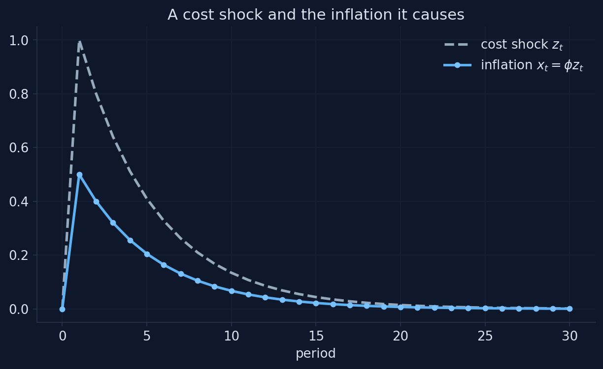
Chart: our simulation of equations (D.1)–(D.3), \(a = 0.9\), \(b = 0.14\), \(\rho = 0.8\); Appendix D, Section D.4.
The decision rule turns a forward-looking equation into a formula
- inflation jumps by \(\phi =\) 0.5 in period 1: half the shock
- it then fades at the shock’s own rate, \(\rho = 0.8\): 0.5, 0.4, 0.32, …
- nothing else moves inflation: no momentum, no delay
Solving a model means finding this kind of rule; everything else (charts, forecasts, likelihoods) is computed from it.
If the shock lasts longer, does inflation respond more or less?
Persistence \(\rho\) rises from 0.8 to 0.95. What happens to the jump of inflation in period 1?
Write down your guess for \(\phi = b/(1 - a\rho)\) at \(\rho = 0.95\) before moving the slider. Bigger or smaller than 0.5? By how much?
A longer-lasting shock moves inflation more on impact
Mini-model built for this deck from equations (D.1)–(D.3) of Appendix D (\(a = 0.9\), \(b = 0.14\), a cost shock of 1 in period 1).
Persistence multiplies the response: φ almost doubles from ρ = 0.8 to 0.95
| Persistence \(\rho\) | 0.5 | 0.6 | 0.7 | 0.8 | 0.9 | 0.95 |
|---|---|---|---|---|---|---|
| Jump of inflation \(\phi = b/(1-a\rho)\) | 0.25 | 0.30 | 0.38 | 0.50 | 0.74 | 0.97 |
What people expect about a shock’s duration matters as much as its size: a cost shock expected to last moves prices far more today.
The equation has many solutions; only one stays bounded
Step 1. After the shock there are no surprises, so solve the equation for next period’s inflation: \[x_{t+1} = \frac{x_t - b\,z_t}{a}\]
Step 2. Start inflation off the rule by a gap \(d_t = x_t - \phi z_t\), and subtract the rule from both sides: \[d_{t+1} = \frac{1}{a}\, d_t\]
Step 3. With \(a = 0.9\), the factor \(1/a = 1.11 > 1\): any gap grows by 11% a period and explodes.
Every starting value of inflation satisfies the equation each period; only the one with no gap keeps inflation bounded.
Inflation starts 0.05 above the decision rule. What happens next?
Follow the gap over 30 periods. Does it shrink, stay, or grow? How large is it at the end?
Use \(d_{t+1} = d_t / a\) with \(a = 0.9\): after 29 more periods the gap has been multiplied by \(1.11^{29}\). Roughly how big is that?
Only one path stays bounded: every other path explodes
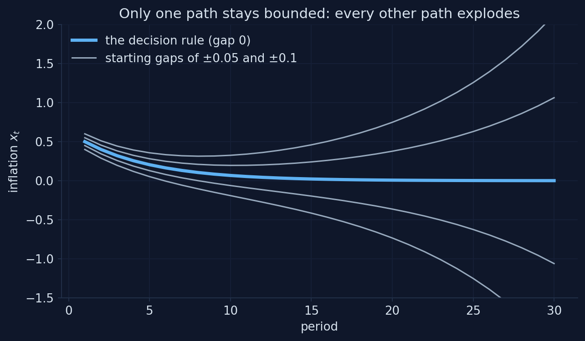
Chart: our simulation of equation (D.1) from starting gaps of ±0.05 and ±0.1, \(a = 0.9\); Appendix D, Section D.4.
The jump variable picks the one bounded path
- a starting gap is multiplied by \(1/a =\) 1.11 every period: about 21 times in 29 periods
- inflation is a jump variable: nothing from the past ties it down, so it can jump in period 1
- it jumps to the one value that puts the economy on the stable path: \(x_1 = \phi z_1 = 0.5\)
Rational expectations plus “no explosions” pin down a unique solution.
Blanchard–Kahn: a unique solution needs as many unstable roots as jump variables
| Unstable roots (absolute value > 1) vs jump variables | Solutions that stay bounded | Name |
|---|---|---|
| equal | exactly one | determinate |
| fewer unstable roots | infinitely many | indeterminate |
| more unstable roots | none | no stable solution |
Our model: one unstable root (\(1/a = 1.11\)) and one jump variable (\(x_t\)): exactly one stable solution.
What if price setters weighed tomorrow more than today?
Set \(a = 1.1\). What happens to the paths that start off the decision rule?
The factor is now \(1/a = 0.91 < 1\). Do the gaps still explode? How many stable solutions does the model have now?
When a > 1 every path is bounded: the model cannot pin down inflation
Mini-model built for this deck from equations (D.1)–(D.4) of Appendix D (\(b = 0.14\), \(\rho = 0.8\); starting gaps of ±0.05 and ±0.1).
Too few unstable roots: indeterminacy, and room for self-fulfilling expectations
- with \(a = 1.1\) the root is \(1/a =\) 0.91 < 1: no unstable root, but still one jump variable
- every gap shrinks, so every starting value of inflation gives a bounded path
- the model is indeterminate: it cannot say what inflation will be, and expectations alone (sunspots) can move it
- in New Keynesian models, a central bank that raises the rate more than one for one with inflation (the Taylor principle, Ch. 13) rules this out
“Rational expectations” does not mean that people know the future
“Rational expectations means everyone knows what will happen.”
People know the model and the odds of each shock, not the shocks themselves. Their forecasts are right on average; each new shock is a surprise.
Perfect foresight: write every period’s equation and solve them all together
After the shock is known, (D.1) for periods \(1, \dots, T\) is \(T\) equations in \(T\) unknowns, once we add a terminal condition: \(x_{T+1} = 0\) (back at the steady state).
\[\begin{pmatrix} 1 & -a & 0 & 0 \\ 0 & 1 & -a & 0 \\ 0 & 0 & 1 & -a \\ 0 & 0 & 0 & 1 \end{pmatrix} \begin{pmatrix} x_1 \\ x_2 \\ x_3 \\ x_4 \end{pmatrix} = b \begin{pmatrix} z_1 \\ z_2 \\ z_3 \\ z_4 \end{pmatrix} \qquad (T = 4)\]
This is the second way to solve a model, and the one Snowdrop uses for nonlinear models: find the whole path at once.
Newton’s method: guess the path, measure the residuals, correct with the Jacobian
Step 1. Guess a path \(x\) (e.g., “nothing happens”: \(x = 0\)).
Step 2. Compute the residuals \(r(x)\): how far each period’s equation is from holding.
Step 3. Correct the guess with the matrix of derivatives \(J\), the Jacobian, and repeat until the residuals vanish: \[x \;\leftarrow\; x - J^{-1}\, r(x)\]
In one dimension this is “follow the tangent line to zero”; with \(T\) periods it does the same for all of them at once.
For a linear model, Newton’s method converges in one step
T_long = 80 # a long horizon, so that x_81 = 0 does no harm
z_long = rho ** np.arange(T_long) # the cost shock in periods 1, ..., 80
def residuals(x_path):
"""Equation (D.1) for t = 1, ..., 80, with the terminal condition x_81 = 0."""
x_next = np.append(x_path[1:], 0.0)
return x_path - a * x_next - b * z_long
J = np.eye(T_long) - a * np.eye(T_long, k=1) # the Jacobian of the residuals
guess = np.zeros(T_long) # start from "nothing happens"
for step in range(1, 4):
guess = guess - np.linalg.solve(J, residuals(guess))
print(f"Newton step {step}: largest residual {np.abs(residuals(guess)).max():.1e}")
print(f"Largest gap to the decision rule in periods 1-{T}: {np.abs(guess[:T] - x[1:T + 1]).max():.1e}")Newton step 1: largest residual 2.8e-17
Newton step 2: largest residual 2.8e-17
Newton step 3: largest residual 2.8e-17
Largest gap to the decision rule in periods 1-30: 4.1e-11Two methods, one answer: the stacked path matches the decision rule of guess and verify.
Snowdrop’s two Newton methods: ABLR stacks all periods, LBJ sweeps forward and back
ABLR: one big system
Stack every equation of every period into one large, sparse system, as on the previous slides, and apply Newton’s method to the whole of it.
LBJ: period by period
Solve the same system by working through the periods, forward and then backward (Juillard, Laxton, McAdam and Pioro, 1998). Cheaper for long horizons.
Both: the same answer
They solve the same equations, so they must agree. On the paper’s model they do, to 1.3e−17, until an exogenous path enters (Act III).
YAML: four rules cover almost every model file
key: valuepairs, one per line- nesting by indentation with spaces (never tabs)
- lists in brackets
[x, z]or one item per line after- #starts a comment
{'name': 'A tiny example', 'symbols': {'variables': ['x', 'z'], 'parameters': ['a', 'b', 'rho']}, 'calibration': {'a': 0.9, 'b': 0.14}}A Snowdrop model file: the paper’s monetary model as the package ships it
name: Monetary policy model example
symbols:
variables: [PDOT,RR,RS,Y]
exogenous: [exo]
shocks: [ey,err,ers,epdot]
parameters: [g,p_pdot1,p_pdot2,p_pdot3,p_rs1,p_y1,p_y2,p_y3]
equations:
- PDOT = p_pdot1*PDOT(+1) + (1-p_pdot1)*PDOT(-1) + p_pdot2*(g^2/(g-Y) - g) + p_pdot3*(g^2/(g-Y(-1)) - g) + epdot
- RR = RS - p_pdot1*PDOT(+1) - (1-p_pdot1)*PDOT(-1) + err
- RS = p_rs1*PDOT + Y + ers + exo
- Y = p_y1*Y(-1) - p_y2*RR - p_y3*RR(-1) + eyFour variables, four equations: one equation per endogenous variable, written as you would on paper.
The file’s last blocks hold the numbers, the labels and the experiment
Timing is written in brackets: x(−1) is a lag, x(+1) an expectation
PDOT(-1)is last period’s value, a lag;PDOT(+1)is the value expected for next period, a lead: an equation with a lead is forward-looking- shocks hit in the periods of
options: periods, with the sizes inshock_values, in the order of the shock list - exogenous variables follow a path set from outside, period by period (Act III uses one for a policy-rate revision)
- a parameter can change over time:
p_pdot1: [0.4, 0.5, 0.6]means 0.4 in period 1, 0.5 in period 2, and 0.6 from period 3 on
importModel reads the file and reports each equation’s residual
Non-Linear Model
Transition Equations:
---------------------
1 0.000 : PDOT = p_pdot1*PDOT(+1) + (1-p_pdot1)*PDOT(-1) + p_pdot2*(g**2/(g-Y) - g) + p_pdot3*(g**2/(g-Y(-1)) - g) + epdot
2 0.000 : RR = RS - p_pdot1*PDOT(+1) - (1-p_pdot1)*PDOT(-1) + err
3 0.000 : RS = p_rs1*PDOT + Y + ers + exo
4 0.000 : Y = p_y1*Y(-1) - p_y2*RR - p_y3*RR(-1) + eyThe number before each equation is its residual at the starting values: 0.000 everywhere means you start from a steady state.
The model object holds everything the file defined
Variables: ['PDOT', 'RR', 'RS', 'Y']
Shocks: ['ey', 'err', 'ers', 'epdot']
Exogenous: ['exo']
Options: {'T': 14, 'periods': [1], 'shock_values': [0.02]}model.symbols, model.calibration and model.options are ordinary Python dictionaries: change them in code instead of editing the file.
Snowdrop counts the roots: one unstable root, one forward-looking variable
Absolute values of the roots: [0. 0.015 0.015 0.995 1.42 ]
Roots larger than 1: 1 | forward-looking variables: 1One unstable root (1.42) and one jump variable (inflation, PDOT(+1)): Blanchard–Kahn holds, and the paper’s model has a unique stable solution.
Act II formula sheet: solving with expectations
| Idea | Formula | In code / Snowdrop |
|---|---|---|
| Model with expectations | \(x_t = a\,\mathbb{E}_t x_{t+1} + b z_t\), \(z_t = \rho z_{t-1} + \varepsilon_t\) | PDOT(+1) in a model file |
| Decision rule | \(x_t = \phi z_t\), \(\phi = b/(1 - a\rho)\) | phi = b / (1 - a * rho) |
| Gap from the rule | \(d_{t+1} = d_t / a\): explodes if \(1/a > 1\) | the root count |
| Blanchard–Kahn | unstable roots = jump variables ⇒ unique solution | driver.findEigenValues |
| Perfect foresight | stack \(T\) periods + terminal condition \(x_{T+1} = 0\) | options: T |
| Newton’s method | \(x \leftarrow x - J^{-1} r(x)\) | np.linalg.solve(J, r); ABLR, LBJ |
| Model file | symbols, equations, calibration, labels, options |
importModel / load_model |
| Timing | x(-1) lag, x(+1) lead (expectation) |
Simulating three models
Act III
Start with a model you know: the AS/AD model of Chapter 13
\[\widetilde{Y}\!_t = \bar{a}_t - \bar{b}\bar{m}\,(\pi_t - \bar{\pi}) \qquad \text{(AD: the IS curve plus the policy rule)}\] \[\pi_t = \pi_{t-1} + \bar{\nu}\,\widetilde{Y}\!_t + \bar{o}_t \qquad \text{(AS: the Phillips curve)}\]
- \(\widetilde{Y}\!_t\): output gap; \(\pi_t\): inflation, both in percent; \(\bar{a}_t\): demand shock; \(\bar{o}_t\): inflation shock
- Chapter 13’s baseline: \(\bar{\pi} = 2\), \(\bar{m} = 0.5\), \(\bar{b} = 2\), \(\bar{\nu} = 1\)
- no expected future values, only the past \(\pi_{t-1}\): not a DSGE model, but written, solved and simulated with the same tools
The whole model fits in one short model file
name: The AS/AD model of Chapter 13
symbols:
variables: [Ytil, infl] # output gap and inflation, in percent
shocks: [a, o] # demand shock and inflation shock
parameters: [b, m, nu, infl_bar] # IS slope, policy response, Phillips slope, inflation target
equations:
- Ytil = a - b*m*(infl - infl_bar) # the AD curve
- infl = infl(-1) + nu*Ytil + o # the AS curve
calibration:
b: 2.0
m: 0.5
nu: 1.0
infl_bar: 2.0
Ytil: 0.0 # starting values: the steady state
infl: 2.0
options:
T: 20
periods: [1]
shock_values: [[0.0, 2.0]] # Event 1: an inflation shock o = 2 in period 1Don’t call a variable pi: in the algebra library Snowdrop uses, pi is the constant 3.14159…
An inflation shock of 2 points hits in period 1. What happens?
How far does output fall, and how fast does inflation return to its 2% target?
Use what you know from Chapter 13: does output fall by more or less than 1%? Does the inflation gap close in one period, halve each period, or close more slowly?
Snowdrop solves the model and returns one row per period
Ytil infl
0 0.000 2.000
1 -1.000 3.000
2 -0.500 2.500
3 -0.250 2.250
4 -0.125 2.125
5 -0.062 2.062Period 0 holds the starting values. simulate is our helper around Snowdrop’s run: it solves the model and returns a pandas table.
Snowdrop’s chart of the inflation shock
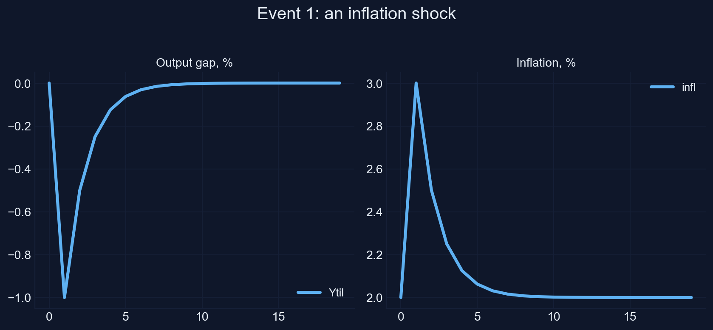
Chart: Snowdrop’s plot (restyled) of our AS/AD model file, equations (D.5)–(D.6); Appendix D, Section D.6.
The inflation gap halves every period, exactly as in Chapter 13
- output falls 1% and inflation rises to 3% in period 1
- each period the gaps shrink by \(\lambda = 1/(1 + \bar{b}\bar{m}\bar{\nu}) = 1/2\)
- Chapter 13’s formula: \(\widetilde{Y}\!_t = \big[\bar{a}_t - \bar{b}\bar{m}(\pi_{t-1} + \bar{o}_t - \bar{\pi})\big] / (1 + \bar{b}\bar{m}\bar{\nu})\)
Largest difference between Snowdrop’s path and Chapter 13’s formula, over 20 periods: 0.0e+00.
Change an experiment in code: new starting values, new shocks
# Event 2: disinflation. Start at the old target, 4 percent; the new target is 2; no shock
asad = load_model("asad.yaml")
set_values(asad, "variables", {"infl": 4.0}) # inflation starts at the old target
asad.options["shock_values"] = [[0.0, 0.0]] # no shock
event2 = simulate(asad)
# Event 3: a demand shock a = 2 in each of periods 1 to 9
asad = load_model("asad.yaml")
asad.options["periods"] = list(range(1, 10)) # periods 1, 2, ..., 9
asad.options["shock_values"] = [[2.0, 0.0]] * 9 # a = 2 and o = 0 in each of them
event3 = simulate(asad)The file stays the same; set_values and options set up each experiment.
The central bank lowers its target from 4% to 2%. What does it cost?
Inflation starts at the old target, 4%. The rule now aims at 2%. What happens to output?
Is there a recession? How deep is it in period 1, and how long does disinflation take?
Disinflation: a recession of 1% brings inflation from 4% to 2%
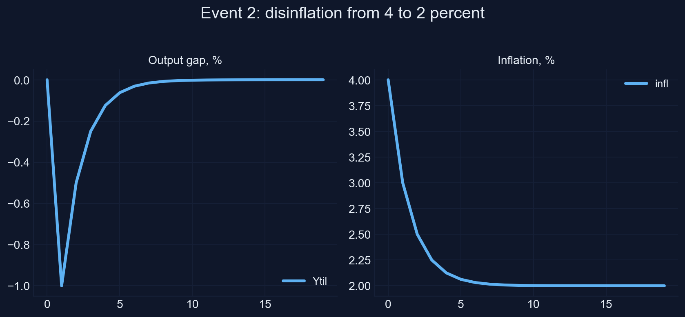
Chart: Snowdrop’s plot (restyled) of our AS/AD model file with inflation starting at 4% and a 2% target; Appendix D, Section D.6.
Disinflation costs a recession that halves every period
- in period 1 output falls 1%: \(\widetilde{Y}\!_1 = -\bar{b}\bar{m}(4-2)/(1+\bar{b}\bar{m}\bar{\nu}) = -1\)
- inflation falls to 3%, then 2.5%, 2.25%, …: the gap to the new target halves each period
- the same dynamics as Event 1, mirrored: the economy starts 2 points above target instead of being pushed there
Largest difference to Chapter 13’s formula: 0.0e+00 again.
A demand boom for nine periods. What happens during and after?
Spending rises by 2% of potential output in periods 1 to 9, then returns to normal. Trace output and inflation.
During the boom, does output stay 2% above potential? Where does inflation go? And when the boom ends, does output simply return to potential?
A demand boom raises inflation; ending it takes a recession
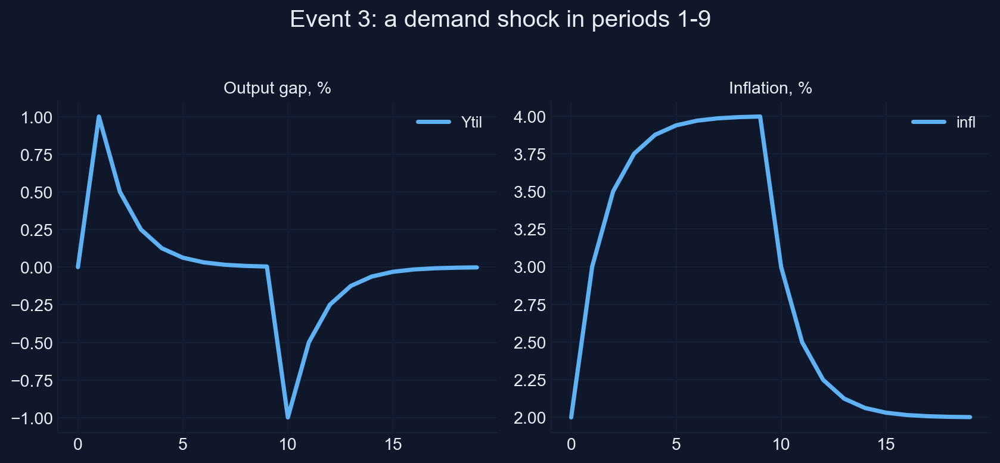
Chart: Snowdrop’s plot (restyled) of our AS/AD model file with a demand shock of 2 in periods 1–9; Appendix D, Section D.6.
All three events match Chapter 13 exactly
- during the boom, rising inflation makes the rule raise the real rate, which pulls output back toward potential
- inflation climbs toward 4% and stays there while the shock lasts
- when the shock ends, a recession is needed to bring inflation back to 2%
- largest difference to Chapter 13 in each event: 0.0e+00
The workflow works: write the file, load it, change the experiment in code, simulate, plot, check against a known answer.
The paper’s model: a Phillips curve that bends upward near full capacity
\[\pi_t = p_1\,\pi_{t+1} + (1-p_1)\,\pi_{t-1} + p_2\Big(\frac{g^2}{g-y_t}-g\Big) + p_3\Big(\frac{g^2}{g-y_{t-1}}-g\Big) + \varepsilon^{\pi}_t\]
- inflation mixes expected inflation (weight \(p_1 = 0.414\)) and past inflation
- the output gap \(y_t\) enters through \(g^2/(g-y) - g\): close to \(y\) for small gaps, but rising ever faster as \(y\) approaches \(g = 0.049\)
- all variables are deviations from the steady state, in decimals (0.01 is one percentage point)
Three more equations: the real rate, the policy rule and the IS curve
\[r_t = i_t - p_1\,\pi_{t+1} - (1-p_1)\,\pi_{t-1} + \varepsilon^{r}_t\] \[i_t = p_4\,\pi_t + y_t + \varepsilon^{i}_t + \text{exo}_t\] \[y_t = p_5\,y_{t-1} - p_6\,r_t - p_7\,r_{t-1} + \varepsilon^{y}_t\]
- real rate: the policy rate minus expected inflation (Ch. 8, 12)
- policy rule: \(p_4 = 3\) points per point of inflation, one for one with the gap; \(\text{exo}_t\) a deliberate change
- IS curve: a higher real rate, now or last period, lowers the gap (Ch. 11, 12)
A boom and a slump of the same size: do they move inflation equally?
Compare an output gap of +3% with one of −3%. Does the convex term treat them symmetrically?
Sketch \(g^2/(g-y) - g\) against \(y\) for \(g = 0.049\). Where does it bend, and which way?
The convex term matches the gap near zero but rises much faster in booms

Chart: the output-gap term of equation (D.7), \(g = 0.049\), against a linear Phillips curve; Appendix D, Section D.7.
Booms raise inflation by more than slumps of the same size lower it
- simulate an output shock of +2% and one of −2%: inflation peaks at about +1.2% after the boom but falls only about −0.55% after the slump
- a linear model would give mirror images; the asymmetry is the nonlinearity
- the model’s solution therefore depends on the size and sign of the shock, so it needs a nonlinear solver
Nonlinear models are where Newton’s method on the whole path earns its keep.
The paper’s listing and the package’s file differ in five small ways
| The paper’s listing | Snowdrop’s JLMP98.yaml |
|
|---|---|---|
| Parameter names | p1, …, p7 |
p_pdot1, p_pdot2, p_pdot3, p_rs1, p_y1, p_y2, p_y3 |
| Shocks | one, ey (to output) |
four: ey, err, ers, epdot |
| Layout | equations and calibration indented under symbols: Snowdrop would reject it |
separate blocks |
| The policy revision | exo: [0,0,0,0.03,0] in calibration |
not set: we set it in code |
| Shock | periods: [1], shock_values: [std], std: 0.02 |
the same |
Harmless, but you must know them to reproduce the paper’s figure.
Newton’s method solves the nonlinear model in five iterations; LBJ and ABLR agree
paths = {}
for method in ["LBJ", "ABLR"]:
jlmp = load_model("JLMP98.yaml", Solver=method)
jlmp.options["periods"] = [1]
jlmp.options["shock_values"] = [0.02] # ey = 0.02: a 2 percent output shock in period 1
(y, dates), text = quietly(driver.run, model=jlmp, Plot=False)
paths[method] = np.asarray(y)
print(method, "|", " | ".join(text.strip().splitlines()[-2:]))
print(f"Largest difference between the two methods: {np.abs(paths['LBJ'] - paths['ABLR']).max():.1e}")LBJ | Elapsed time: 0.01 (seconds) | Number of iterations: 5; error: 1.9e-11
ABLR | Elapsed time: 0.10 (seconds) | Number of iterations: 5; error: 1.9e-11
Largest difference between the two methods: 1.3e-17How close is the first Newton step to the solution?
Newton’s first step from “nothing happens” is the solution of the linearized model. With the convex Phillips curve, will it over- or underestimate the rise of inflation after the boom?
Think of the convex term: the linear approximation replaces it by \(y\). Is \(y\) above or below \(g^2/(g-y) - g\) for a positive gap?
Each Newton step brings the path closer; the residuals collapse
Mini-model built for this deck: equations (D.7)–(D.10) of Appendix D, 14 periods stacked and solved by Newton’s method in NumPy; it reproduces the notebook’s Fig. 1 table.
The linearized first step misses a third of the inflation; four more steps fix it
- after one step, inflation in period 1 is 0.62%; the solution is 0.94%
- the linear approximation replaces the convex term by \(y\), which is smaller for a positive gap
- the residuals fall from 3.0e−2 to 2.6e−3, 6.3e−5, 7.6e−8, 1.2e−13 and 6.9e−18: correct digits double each step
This is what Snowdrop’s “Number of iterations: 5” means: five Newton steps on the stacked system.
The policy revision is an exogenous path: 3 points in period 4
from snowdrop.src.utils.util import getExogenousSeries
jlmp = load_model("JLMP98.yaml", Solver="LBJ")
jlmp.options["periods"] = [1]
jlmp.options["shock_values"] = [0.02] # the 2 percent output shock in period 1
jlmp.symbolic.exog_data = {"exo": pd.Series([0.03, 0.0], index=[4, 5])}
jlmp.calibration["exogenous"] = getExogenousSeries(jlmp)
fig1 = simulate(jlmp)
(100 * fig1.iloc[:9]).round(2) # in percent, periods 0 to 8The policy rate is raised by 3 percentage points above what the rule says, in period 4 only.
A 2% output shock, then a 3-point policy revision: sketch the response
Output jumps 2% in period 1. In period 4 the central bank raises its rate 3 points more than its rule says. Sketch inflation and the output gap for eight periods.
When does inflation peak? When does the output gap turn negative? What does the revision in period 4 do to period 5?
Our numbers match the paper’s Fig. 1
PDOT RR RS Y
0 0.00 0.00 0.00 0.00
1 0.94 3.97 4.44 1.61
2 1.14 1.85 2.48 -0.94
3 0.19 -0.76 -0.22 -0.79
4 -0.30 1.97 1.89 -0.19
5 -0.46 -1.59 -1.91 -0.52
6 -0.33 -0.34 -0.63 0.38
7 -0.03 0.28 0.10 0.19
8 0.03 0.07 0.05 -0.04The paper’s Fig. 1 shows
- inflation about 0.9% in period 1, 1.1% in period 2, a low of about −0.45% in period 5
- the real rate jumps to about 4%
- the output gap 1.6% in period 1, −0.9% in period 2
The table has the same numbers: the replication works, with the LBJ solver.
Check before you trust: LBJ satisfies the equations, ABLR misses the revision
from snowdrop.src.numeric.solver.util import checkSolution
errors = checkSolution(jlmp, periods=jlmp.options["periods"], y=fig1.to_numpy())
print(f"LBJ: largest residual of the four equations: {np.abs(errors).max():.1e}")
# ... the same experiment solved with Solver="ABLR" ...
errors = checkSolution(jlmp_ablr, periods=jlmp_ablr.options["periods"], y=path_ablr.to_numpy())
print(f"ABLR: largest residual of the four equations: {np.abs(errors).max():.1e}")LBJ: largest residual of the four equations: 3.5e-18
ABLR: largest residual of the four equations: 3.0e-02ABLR leaves a residual of exactly 0.03 in the policy rule: in this version it ignores the exogenous path. Snowdrop’s report gives no warning; only the residual check reveals it.
Replication of the paper’s Fig. 1: the contribution of every term

Replication of Fig. 1 in Goumilevski and Otterson (2025), JOSS 10(112), 8197, with Snowdrop’s plotDecomposition (restyled); Appendix D, Section D.7.
A contribution chart splits each equation into its terms
| Period | Lead of inflation | Lag of inflation | Output gap | Lag of output gap | Sum = inflation |
|---|---|---|---|---|---|
| 1 | 0.471 | 0.000 | 0.471 | 0.000 | 0.942 |
| 2 | 0.079 | 0.552 | −0.155 | 0.663 | 1.139 |
| 3 | −0.126 | 0.667 | −0.134 | −0.218 | 0.190 |
| 4 | −0.191 | 0.111 | −0.037 | −0.188 | −0.304 |
| 5 | −0.138 | −0.178 | −0.093 | −0.051 | −0.461 |
| 6 | −0.013 | −0.270 | 0.080 | −0.131 | −0.334 |
The terms add up to inflation in every period: Snowdrop’s decompose returns the numbers behind the bars.
The paper’s chart tells the whole story at a glance
- period 1: the boom pushes inflation up through the output gap (0.471) and through expectations of more inflation (0.471)
- the policy rate jumps, the real rate reaches 4%, and the output gap turns negative from period 2
- period 2: inflation peaks at 1.14%, carried by its own lag and the lagged boom
- periods 4–5: the revision raises the real rate once more and deepens the slump; inflation reaches its low, −0.46%
A real business cycle model: five equations, one household, no frictions
\[\frac{1}{C_t}=\beta\,\frac{1+r_t}{C_{t+1}} \qquad\qquad Y_t = C_t + K_t-(1-\delta)K_{t-1}\] \[Y_t = K_{t-1}^{\gamma}\,A_t^{1-\gamma} \qquad\qquad \gamma\,\frac{Y_{t+1}}{K_t}=r_t+\delta\] \[\log A_t=\rho\log A_{t-1}+(1-\rho)\log a+\varepsilon_t\]
Calibration: \(\beta = 0.99\), \(\gamma = 0.5\), \(\delta = 0.03\), \(\rho = 0.8\), \(a = 0.1\); one period is a quarter; labor is fixed at one.
Each equation is a choice, a constraint or a shock
- Euler equation (Ch. 16), log utility: give up a unit of consumption today if the return \(1+r_t\), discounted by \(\beta\), makes up for it
- resource constraint: output is consumed or invested; investment \(K_t-(1-\delta)K_{t-1}\) builds capital, which depreciates at \(\delta\) (Ch. 17)
- production function (Ch. 4) with labor-augmenting technology \(A_t\)
- demand for capital: rent capital until its marginal product equals its user cost \(r_t+\delta\) (Ch. 17)
- technology shock: an AR(1) in logs around the level \(a\)
In the steady state nothing moves: four formulas give every value
Step 1. Euler equation with \(C_{t+1} = C_t\): \(1 = \beta(1+r)\), so \[r^* = \frac{1}{\beta} - 1\]
Step 2. Capital demand with \(Y_{t+1} = Y\): the capital–output ratio is \[\frac{K^*}{Y^*} = \frac{\gamma}{r^* + \delta}\]
Step 3. Production, written as \(Y = (K/Y)^{\gamma/(1-\gamma)} A\) with \(A = a\); then the resource constraint: \[Y^* = a\Big(\frac{K^*}{Y^*}\Big)^{\gamma/(1-\gamma)} \qquad C^* = Y^* - \delta K^*\]
The steady state by hand: capital is about 12 times quarterly output
beta, gamma, delta, a_level = 0.99, 0.5, 0.03, 0.1
r_star = 1 / beta - 1
KY = gamma / (r_star + delta)
Y_star = a_level * KY ** (gamma / (1 - gamma))
K_star = KY * Y_star
C_star = Y_star - delta * K_star
steady = {"K": K_star, "r": r_star, "A": a_level, "Y": Y_star, "C": C_star}
pd.Series(steady).round(5)K 15.54638
r 0.01010
A 0.10000
Y 1.24685
C 0.78046Snowdrop’s steady-state search stops 0.3% short: use the formula
| K | r | A | Y | C | |
|---|---|---|---|---|---|
| by hand | 15.54638 | 0.01010 | 0.10000 | 1.24685 | 0.78046 |
| Snowdrop’s search | 15.58878 | 0.01008 | 0.10000 | 1.24856 | 0.78090 |
| difference, % | 0.27 | −0.21 | 0.00 | 0.14 | 0.06 |
- the search stops at residuals of about 0.00003, which it treats as small enough
- a model that starts slightly off its steady state drifts even when no shock hits
- with the formula’s values as starting values, the largest move with no shock is 2.2e−16
When the steady state has a formula, use the formula; then check that a run with no shock stays put.
Technology jumps 10.5% and then fades. What do households do?
Which jumps more on impact: output or consumption? Does capital jump? What does the interest rate do?
Remember Chapter 16: households smooth consumption, and they know this shock is temporary (\(\rho = 0.8\)).
Snowdrop’s chart of the RBC model after a technology shock
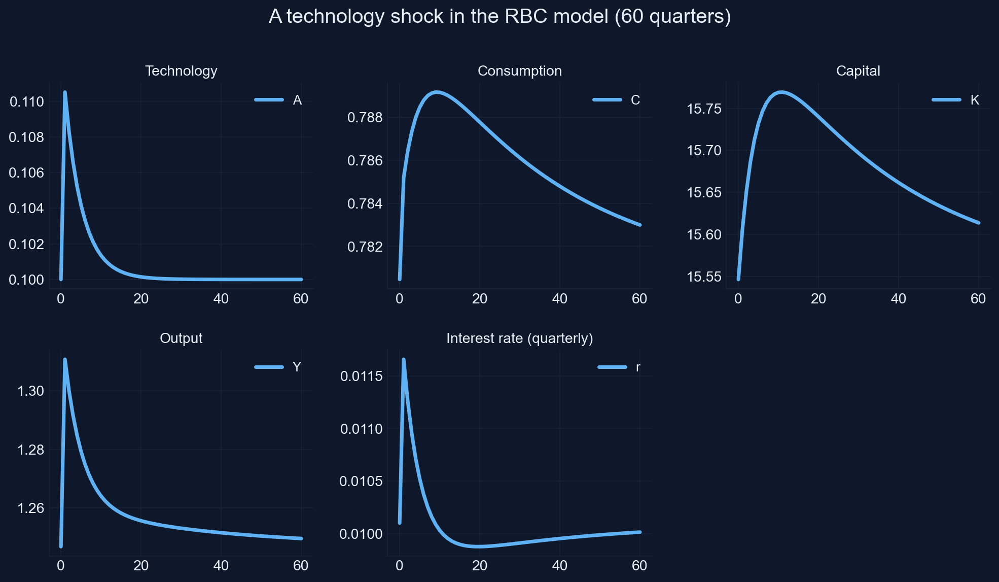
Chart: Snowdrop’s plot (restyled) of RBC.yaml, a technology shock of 0.1 in period 1, 60 quarters; Appendix D, Section D.8.
Impulse responses: percent deviations from the steady state
| Quarter | 1 | 2 | 4 | 8 | 16 | 40 |
|---|---|---|---|---|---|---|
| Technology \(A\) | 10.52 | 8.33 | 5.25 | 2.12 | 0.35 | 0.00 |
| Output \(Y\) | 5.13 | 4.28 | 3.05 | 1.73 | 0.86 | 0.38 |
| Consumption \(C\) | 0.61 | 0.76 | 0.96 | 1.11 | 1.02 | 0.55 |
| Capital \(K\) | 0.38 | 0.67 | 1.07 | 1.39 | 1.35 | 0.74 |
| Interest rate \(r\) (points, annual) | 0.62 | 0.47 | 0.25 | 0.02 | −0.09 | −0.06 |
Output jumps with technology; consumption rises little but stays up

Chart: impulse responses of our RBC simulation (RBC.yaml, steady state by formula); Appendix D, Section D.8.
Households save most of a temporary windfall
- output jumps 5.1%, about half of technology’s 10.5%: the exponent \(1-\gamma = 0.5\)
- consumption rises only 0.6%: the shock is temporary, so households smooth consumption (Ch. 16)
- the rest is invested: capital builds up for years (it peaks between quarters 8 and 16) and keeps output and consumption up after technology has returned
- the interest rate rises with the marginal product of capital, then falls below its steady state while the extra capital is run down
The propagation comes from capital: a one-quarter shock has effects for a decade.
Twice the shock, twice the response?
Scale each response of output to a shock of 1%. Do shocks of 1%, 10%, +30% and −30% give the same scaled response?
A linear model answers yes. The RBC model has a power and a ratio. Where would you expect the scaled responses to differ?
Small shocks scale; large positive and negative shocks do not

Chart: output response per 1% of technology shock in RBC.yaml, four shock sizes; Appendix D, Section D.8.
Linear methods serve normal business cycles; big events need nonlinear ones
- for small shocks the scaled responses coincide: a linear solution would be accurate
- for ±30% they come apart: technology enters in logs, so \(\varepsilon = 0.3\) raises \(A\) by 35% (\(e^{0.3}-1\)), while \(\varepsilon = -0.3\) lowers it by only 26%
- normal business cycles are small, so linear methods serve well for estimation (Acts IV and V)
- pandemics, financial crises and the zero lower bound are where nonlinear methods earn their keep
Random shocks: one model, ten histories
Shape of the result (paths, periods, variables): (10, 53, 5)By default, Snowdrop’s households know every future shock
“In a stochastic simulation, the model solves each period with the information people have.”
Snowdrop’s default solves each history as one perfect-foresight path: all random shocks are known in period 1. anticipate=False reveals each shock only when it hits.
Ten simulated histories of the same economy
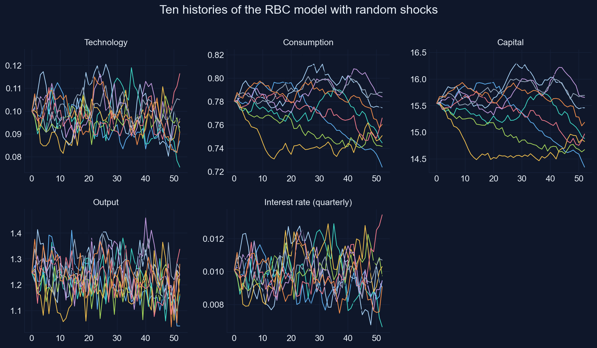
Chart: Snowdrop’s plot (restyled) of RBC1 with zero-mean shocks, ten paths, anticipate=False, seed 2026; Appendix D, Section D.8.
A stable economy hit by small random shocks: the DSGE view of the cycle
- the same model, parameters and distribution of shocks produce ten different histories
- consumption is much smoother than output in every history; capital moves slowly
- this is how DSGE models see business cycles: no cycle is built in; random shocks plus propagation make one
- estimation asks the reverse question: given the one history we observed, which parameters make it most likely?
That question is Acts IV and V.
Act III formula sheet: simulating three models
| Idea | Formula | In Snowdrop / code |
|---|---|---|
| AS/AD gap decay | \(\lambda = 1/(1+\bar{b}\bar{m}\bar{\nu})\) | simulate(asad); check vs Ch. 13: 0.0e+00 |
| Change an experiment | new starting values, shocks, periods | set_values, model.options[...] |
| Exogenous path | a planned path, e.g. 0.03 in period 4 | exog_data + getExogenousSeries |
| Residual check | put the path back into the equations | checkSolution (LBJ 3.5e−18, ABLR 0.03) |
| Contribution chart | variable = sum of its equation’s terms | plotDecomposition, decompose |
| RBC steady state | \(r^* = 1/\beta - 1\), \(K^*/Y^* = \gamma/(r^*+\delta)\), \(Y^* = a(K^*/Y^*)^{\gamma/(1-\gamma)}\) | by formula, then set_values |
| Impulse response | \(100\,(X_t/X^* - 1)\) | simulate with one shock |
| Linearity test | response per unit of shock, several sizes | compare scaled paths |
| Random histories | shocks drawn each period, as surprises | Npaths, !MvNormal, anticipate=False |
From model to data
Act IV
A solved linear model is a state-space model
\[s_t = T\,s_{t-1} + R\,\varepsilon_t \qquad \text{(transition: the model)}\] \[y_t = Z\,s_t + u_t \qquad \text{(measurement: what the data show)}\]
- \(s_t\): the state, all the model’s variables stacked in a vector; \(T\) and \(R\) come from the decision rules
- \(y_t\): the observed data; \(Z\) picks which combinations of the state we see
- \(u_t\): measurement errors (Ireland sets them to zero)
The first line is the solved model; the second connects it to a spreadsheet of data.
In Ireland’s model we observe 3 of 7 variables; the filter infers the rest
Observed every quarter
- output growth \(g_t\)
- inflation \(\pi_t\)
- the interest rate \(r_t\)
Never observed
- the output gap \(x_t\) and output \(y_t\)
- the preference shock \(a_t\)
- the cost-push shock \(e_t\)
The Kalman filter does two jobs at once: it infers the unobserved states from the data, period by period, and it computes the likelihood of the data, the number that estimation maximizes.
The smallest case: an AR(1) state seen through noise
\[s_t=\rho\,s_{t-1}+e_t,\quad e_t\sim N(0,\sigma_e^2) \qquad\qquad y_t=s_t+u_t,\quad u_t\sim N(0,\sigma_u^2)\]
rho_true, sig_e, sig_u = 0.9, 1.0, 1.0
T_data = 200
rng = np.random.default_rng(2026)
s_true, y_obs = np.zeros(T_data), np.zeros(T_data)
s_prev = 0.0
for t in range(T_data):
s_true[t] = rho_true * s_prev + sig_e * rng.normal() # the state moves with the model
y_obs[t] = s_true[t] + sig_u * rng.normal() # we see it with noise
s_prev = s_true[t]Standard deviation of the state: 2.00, of the data: 2.25Each period the filter predicts, compares and updates
1. Predict the state with the model: \[\widehat{s}_{t|t-1}=\rho\,\widehat{s}_{t-1|t-1} \qquad P_{t|t-1}=\rho^2P_{t-1|t-1}+\sigma_e^2\]
2. Compare with the data: the forecast error and its variance \[v_t=y_t-\widehat{s}_{t|t-1} \qquad F_t=P_{t|t-1}+\sigma_u^2\]
3. Update: move toward the data by the Kalman gain \(K_t = P_{t|t-1}/F_t\) \[\widehat{s}_{t|t}=\widehat{s}_{t|t-1}+K_t\,v_t \qquad P_{t|t}=(1-K_t)\,P_{t|t-1}\]
Worked example: the first two periods by hand
| Period 1 | Period 2 | |
|---|---|---|
| Predicted state \(\widehat{s}_{t\mid t-1}\) | 0 | \(0.9 \times (-0.464) = -0.418\) |
| Its variance \(P_{t\mid t-1}\) | \(0.81 \times 5.263 + 1 = 5.263\) | \(0.81 \times 0.840 + 1 = 1.681\) |
| Data \(y_t\) | −0.553 | −1.214 |
| Forecast error \(v_t\), variance \(F_t\) | −0.553, 6.263 | −0.796, 2.681 |
| Kalman gain \(K_t = P_{t\mid t-1}/F_t\) | 0.840 | 0.627 |
| Updated state \(\widehat{s}_{t\mid t}\) | \(0 + 0.840 \times (-0.553) = -0.464\) | \(-0.418 + 0.627 \times (-0.796) = -0.917\) |
| Updated variance \(P_{t\mid t}\) | 0.840 | 0.627 |
At first the filter knows little and follows the data closely; as its uncertainty shrinks, the gain falls toward its long-run value of 0.60.
The Kalman gain weighs the model against the data
\[K = \frac{P_{t|t-1}}{P_{t|t-1} + \sigma_u^2}\]
- the model’s prediction is uncertain (\(P\) large) → \(K\) near 1: trust the data
- the data are noisy (\(\sigma_u\) large) → \(K\) near 0: trust the model
- the gain does not depend on the data, only on the variances
The filter is a weighted average of what the model predicts and what the data say, with weights set by their precision.
The likelihood comes for free: one normal density per forecast error
If the model is right, each forecast error \(v_t\) is normal with mean 0 and variance \(F_t\). The probability of the whole sample is the product of these densities, so its logarithm is a sum:
\[\log L=-\frac{1}{2}\sum_{t=1}^{T}\Big(\log 2\pi+\log F_t+\frac{v_t^2}{F_t}\Big)\]
- large surprises \(v_t^2\) relative to their variance lower the likelihood
- a model that claims too much uncertainty (\(F_t\) large) is punished by \(\log F_t\)
- period 1 of the worked example adds \(-\tfrac{1}{2}\big(\log 2\pi + \log 6.263 + 0.553^2/6.263\big) = -1.86\)
The whole filter is one short loop in NumPy
def kalman_filter(y, rho, sig_e, sig_u):
"""Filtered states and log-likelihood of the AR(1)-plus-noise model."""
s_hat = 0.0 # the state's mean before any data
P = sig_e**2 / (1 - rho**2) # and its long-run variance
filtered, loglik = np.zeros(len(y)), 0.0
for t in range(len(y)):
s_pred = rho * s_hat # 1. predict
P_pred = rho**2 * P + sig_e**2
v = y[t] - s_pred # 2. compare
F = P_pred + sig_u**2
K = P_pred / F # 3. update with the Kalman gain
s_hat = s_pred + K * v
P = (1 - K) * P_pred
filtered[t] = s_hat
loglik = loglik - 0.5 * (np.log(2 * np.pi) + np.log(F) + v**2 / F)
return filtered, loglikLog-likelihood at the true parameters: -381.78
Typical error: data 1.07, filtered state 0.76Will the filtered state be closer to the truth than the data are?
The data are the truth plus noise. The filter mixes the data with the model’s prediction. Which one tracks the true state better?
The typical error of the data is 1.07. Guess the typical error of the filtered state.
The filter recovers the state from noisy data

Chart: our simulation of equations (D.17)–(D.21), \(\rho = 0.9\), \(\sigma_e = \sigma_u = 1\), first 80 of 200 periods; Appendix D, Section D.9.
Combining the model with the data cuts the error by almost a third
- typical error of the data: 1.07; of the filtered state: 0.76
- the filter smooths out noise because the model says the state moves gradually (\(\rho = 0.9\))
- it still reacts to the data, with a gain of about 0.60 per period
The filter is the best guess of the state given the model and the data so far.
The data get noisier. How does the filter respond?
Raise the measurement noise \(\sigma_u\) from 1 to 3. What happens to the Kalman gain and to the filtered state?
Does the filter follow the data more closely or less? Does its error rise or fall, and by more or less than the data’s error?
Noisier data, smaller gain: the filter leans on the model
Mini-model built for this deck from equations (D.17)–(D.21) of Appendix D, with the notebook’s simulated state (\(\rho = 0.9\), seed 2026) and its measurement noise scaled by \(\sigma_u\).
The gain falls from 0.94 to 0.23 as the noise rises
| Noise \(\sigma_u\) | 0.25 | 0.5 | 1 | 2 | 3 |
|---|---|---|---|---|---|
| Kalman gain | 0.94 | 0.82 | 0.60 | 0.35 | 0.23 |
| Typical error of the data | 0.27 | 0.54 | 1.07 | 2.14 | 3.21 |
| Typical error of the filtered state | 0.26 | 0.47 | 0.76 | 1.07 | 1.26 |
The noisier the data, the more the filter gains over them: at \(\sigma_u = 3\) its error is 1.26 against the data’s 3.21.
With many variables, the scalars become matrices
\[P_{t|t-1}=T\,P_{t-1|t-1}\,T'+R\,Q\,R' \qquad F_t=Z\,P_{t|t-1}\,Z'+H \qquad K_t=P_{t|t-1}\,Z'\,F_t^{-1}\]
\[\log L = -\frac{1}{2}\sum_t\Big(n\log 2\pi+\log\det F_t+v_t'\,F_t^{-1}\,v_t\Big)\]
- \(Q\) and \(H\) hold the variances of the shocks and of the measurement errors; \(n\) is the number of observed series
- the logic is unchanged: predict, compare, update, add up the likelihood
- Snowdrop’s
Filter="Durbin_Koopman"does this, in a fast and numerically careful version
Maximum likelihood: choose the parameters that make the data most probable
\[\widehat{\theta} = \arg\max_{\theta}\ \log L(\theta)\]
- every value of \(\theta\) gives a log-likelihood: how probable the observed data would be if \(\theta\) were the truth
- the maximum likelihood estimate is the value that makes the data most probable
- with one parameter we can simply try a grid of values and look
The recipe: model in state-space form → Kalman filter → log-likelihood → search for its peak.
The true persistence is 0.9. Where does the likelihood peak?
Run the filter for every \(\rho\) between 0.5 and 0.99 on the 200 observations, and plot the log-likelihood.
Will the peak be exactly at 0.9? Above it or below it? How flat will the curve be around its peak?
The log-likelihood peaks near the true value
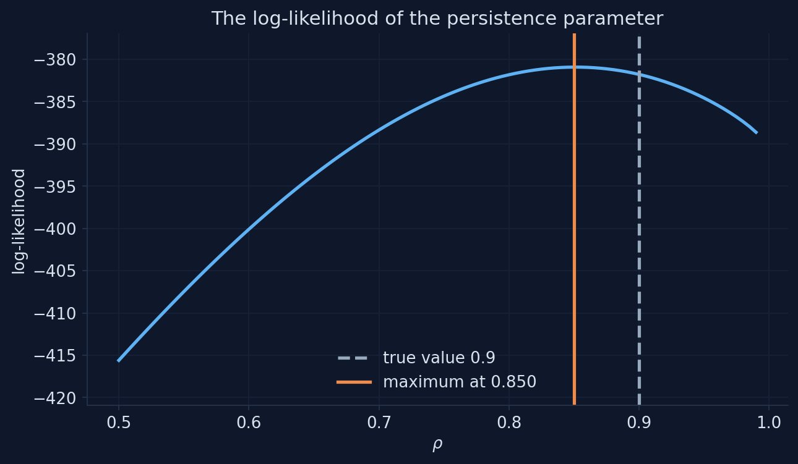
Chart: log-likelihood (D.22) of our 200 simulated observations on a grid of \(\rho\); Appendix D, Section D.10.
Curvature measures precision: standard error = 1/√(−curvature)
def negative_loglik_rho(rho):
filtered_k, ll = kalman_filter(y_obs, rho, sig_e, sig_u)
return -ll
result = optimize.minimize_scalar(negative_loglik_rho, bounds=(0.01, 0.999), method="bounded")
rho_hat = result.x
h = 1e-4
curvature = -(negative_loglik_rho(rho_hat + h) - 2 * negative_loglik_rho(rho_hat)
+ negative_loglik_rho(rho_hat - h)) / h**2
se = 1 / np.sqrt(-curvature)Estimate 0.8512, standard error 0.0376
95 percent interval: 0.778 to 0.925 (true value 0.9)With a quarter of the data, is the likelihood flatter or steeper?
Estimate \(\rho\) from the first 50 observations instead of 200. What happens to the curve and to the standard error?
Guess the standard error with 50 observations. Hint: precision usually grows with the square root of the sample size.
More data, a sharper peak: the standard error shrinks
Mini-model built for this deck from equation (D.22) of Appendix D and the notebook’s 200 simulated observations (the first 25, 50, 100 or 200).
Four times the data, about half the standard error
| Observations | 25 | 50 | 100 | 200 |
|---|---|---|---|---|
| Estimate of \(\rho\) (truth 0.9) | 0.825 | 0.810 | 0.830 | 0.851 |
| Standard error | 0.129 | 0.081 | 0.054 | 0.038 |
Precision grows with the square root of the sample: from 50 to 200 observations the standard error falls from 0.081 to 0.038.
An optimizer finds the peak for all parameters at once
def negative_loglik(theta):
filtered_k, ll = kalman_filter(y_obs, theta[0], theta[1], theta[2])
return -ll
result = optimize.minimize(negative_loglik, x0=[0.5, 0.5, 0.5], method="L-BFGS-B",
bounds=[(0.01, 0.999), (0.01, 10.0), (0.01, 10.0)])
std_errors = np.sqrt(np.diag(np.linalg.inv(hessian(negative_loglik, result.x)))) true estimate std. error
rho 0.9 0.747 0.080
sigma_e 1.0 1.455 0.243
sigma_u 1.0 0.546 0.417- L-BFGS-B: SciPy’s optimizer with bounds, the one Snowdrop uses
- standard errors: square roots of the diagonal of the inverse Hessian of \(-\log L\)
The data cannot tell shocks from noise apart: weak identification
- all three estimates lie within about two standard errors of the truth, but not very close: \(\widehat{\rho} = 0.747\), \(\widehat{\sigma}_e = 1.455\), \(\widehat{\sigma}_u = 0.546\)
- the standard error of \(\sigma_u\) (0.417) is almost as large as the estimate (0.546)
- the data see \(y_t = s_t + u_t\): more persistent, smaller shocks plus more noise fit them almost as well as the truth
A parameter whose standard error is as large as its estimate is weakly identified: don’t build conclusions on it.
The maximum likelihood estimate is not the true value
“Maximum likelihood finds the true parameter.”
It finds the value that best fits this sample: 0.851 with a standard error of 0.038 when the truth is 0.9. The standard error says how far off it may be.
Act IV formula sheet: from model to data
| Idea | Formula | In code / Snowdrop |
|---|---|---|
| State space | \(s_t = T s_{t-1} + R\varepsilon_t\), \(y_t = Z s_t + u_t\) | measurement_equations |
| Predict | \(\widehat{s}_{t\mid t-1} = \rho\widehat{s}_{t-1\mid t-1}\), \(P_{t\mid t-1} = \rho^2 P + \sigma_e^2\) | kalman_filter |
| Compare | \(v_t = y_t - \widehat{s}_{t\mid t-1}\), \(F_t = P_{t\mid t-1} + \sigma_u^2\) | |
| Update | \(K_t = P_{t\mid t-1}/F_t\), \(\widehat{s}_{t\mid t} = \widehat{s}_{t\mid t-1} + K_t v_t\) | Filter="Durbin_Koopman" |
| Starting point | mean 0, variance \(\sigma_e^2/(1-\rho^2)\) | Prior="Equilibrium" |
| Log-likelihood | \(-\tfrac12\sum(\log 2\pi + \log F_t + v_t^2/F_t)\) | |
| Estimate | \(\widehat{\theta} = \arg\max \log L(\theta)\) | optimize.minimize, L-BFGS-B |
| Standard error | \(1/\sqrt{-\text{curvature}}\); \(\sqrt{\text{diag}(H^{-1})}\) for \(-\log L\) | Snowdrop’s table |
Estimating Ireland (2004)
Act V
Ireland asked how much technology shocks matter once other shocks get a chance
Real business cycle theory puts technology shocks at the heart of the cycle. In a New Keynesian model where four kinds of shocks compete, how much of the U.S. cycle do they explain?
Preference shock \(a_t\)
shifts demand (the IS curve)
Cost-push shock \(e_t\)
shifts the Phillips curve
Technology shock \(\varepsilon_{zt}\)
moves output’s level permanently
Policy shock \(\varepsilon_{rt}\)
moves the interest-rate rule
Seven equations: two shocks, an IS curve, a Phillips curve, growth and a policy rule
\[a_t=\rho_a\,a_{t-1}+\varepsilon_{at} \qquad\qquad e_t=\rho_e\,e_{t-1}+\varepsilon_{et}\] \[x_t=\alpha_x\,x_{t-1}+(1-\alpha_x)\,\mathbb{E}_tx_{t+1}-(r_t-\mathbb{E}_t\pi_{t+1})+(1-\omega)(1-\rho_a)\,a_t\] \[\pi_t=\beta\,[\alpha_\pi\,\pi_{t-1}+(1-\alpha_\pi)\,\mathbb{E}_t\pi_{t+1}]+\psi\,x_t-e_t\] \[x_t=y_t-\omega\,a_t \qquad\qquad g_t=y_t-y_{t-1}+\varepsilon_{zt}\] \[r_t-r_{t-1}=\rho_\pi\,\pi_t+\rho_g\,g_t+\rho_x\,x_t+\varepsilon_{rt}\]
All variables are quarterly deviations from the steady state, in decimals.
Each equation, read as economics
- IS curve: the output gap \(x_t\) depends on the expected gap and the real rate (Ch. 11–12); \(\alpha_x\) adds a backward-looking part; a preference shock raises demand
- Phillips curve: the New Keynesian curve of Act II, with a backward-looking weight \(\alpha_\pi\); \(-e_t\): a fall in \(e_t\) raises inflation
- output gap = output minus its efficient level, which moves with the preference shock (\(\omega\))
- growth \(g_t\): the technology shock \(\varepsilon_{zt}\) changes the level of output permanently, so it shows up in growth
- policy rule, in changes of the rate: the Fed raises it when inflation, growth or the gap are high (Ch. 13)
Three U.S. series feed the estimation
What did U.S. output growth, inflation and interest rates do from 1948 to 2002?
Ireland’s data: the United States, 1948–2002
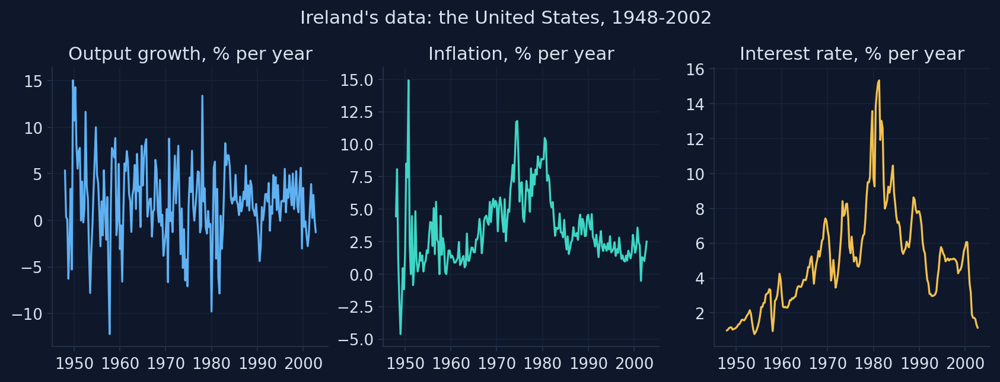
Data: Ireland (2004), U.S. per-capita real GDP growth, GDP-deflator inflation and the three-month Treasury bill rate, 1948Q1–2002Q4 (Snowdrop’s file gpr_1948.csv). Chart: Appendix D, Section D.11.
220 quarters with the Great Inflation and the Volcker disinflation in the middle
- 1948Q1–2002Q4: 220 quarters; Ireland’s own sample ends one quarter later
- averages: output growth 1.94%, inflation 3.43%, interest rate 5.00% a year
- the model uses each series as a deviation from its mean (the
obs_columns), because it describes fluctuations around a steady state
We observe three series; the model must explain all three with four shocks.
The model file links the data to the model and lists what to estimate
measurement_equations:
- obs_g = g + res_obs_g
- obs_pie = pie + res_obs_pie
- obs_r = r + res_obs_r
estimated_parameters:
# NAME, START, LOWER, UPPER, PRIOR, PRIOR MEAN, PRIOR S.D.
- omega, 0.2, 1.e-7, 1, normal_pdf, 0.20, 0.02
- rhopie, 0.3, 1.e-7, 1, normal_pdf, 0.30, 0.1
- std_epsa, 0.0405, 1.e-7, 1, normal_pdf, 0.03, 1.80measurement_equations: the data columns equal model variables plus measurement errors (here with standard deviations of zero)estimated_parameters: name, starting value, bounds, and the prior (used only in the Bayesian part)
Read every label: the file names Ireland’s shocks wrongly
| Symbol | The file’s label | What it is in the equations |
|---|---|---|
a |
“Total Factor Productivity” | the preference shock |
e |
“Aggregate Technology” | the cost-push shock |
epsz |
“Shock to Output Gap” | the technology shock |
Labels only name charts, but wrong names mislead: the appendix fixes them in its copy, ireland.yaml, and says so.
Estimation needs four settings when the model is read
| Setting | What it does |
|---|---|
Solver="Klein" |
solves the linear model with the generalized Schur method (as IRIS does) |
Filter="Durbin_Koopman" |
the Kalman filter of Act IV; estimation works only with this one or "Non_Diffuse_Filter" |
Smoother="Durbin_Koopman" |
also computes the smoothed variables (without it, estimate fails at the end) |
Prior="Equilibrium" |
starts the filter from the long-run variance of the state |
The optimizer starts from the file’s rough values. Will it find Ireland’s estimates?
Snowdrop’s file starts the search at \(\omega = 0.2\), \(\rho_\pi = 0.3\), \(\rho_g = 0.2\), … Ireland published \(\omega = 0.0617\), \(\rho_\pi = 0.3597\), \(\rho_g = 0.2536\).
Will maximum likelihood land on Ireland’s numbers? If it does not, which run should you believe?
Two starting points, two answers: the second fits the data better
first_try, out = estimate(ireland, estimate_ML=True) # from the file's rough values
ireland = load_model("ireland_start.yaml", Solver="Klein", Filter="Durbin_Koopman",
Smoother="Durbin_Koopman", Prior="Equilibrium", measurement_file_path=DATA)
ml, out_ml = estimate(ireland, estimate_ML=True) # from Ireland's published values| Iterations | \(\omega\) | \(\rho_\pi\) | \(\rho_g\) | Log-likelihood | |
|---|---|---|---|---|---|
| First run: the file’s starting values | 57 | 0.193 | 0.301 | 0.211 | 2646.66 |
| Second run: Ireland’s values | 14 | 0.062 | 0.360 | 0.254 | 2648.47 |
| Ireland (2004), Table 1 | 0.0617 | 0.3597 | 0.2536 |
The first run stopped early: on a flat likelihood an optimizer can stop where it no longer finds improvements, and where that is can differ from computer to computer.
Started from Ireland’s values, our estimates match his Table 1
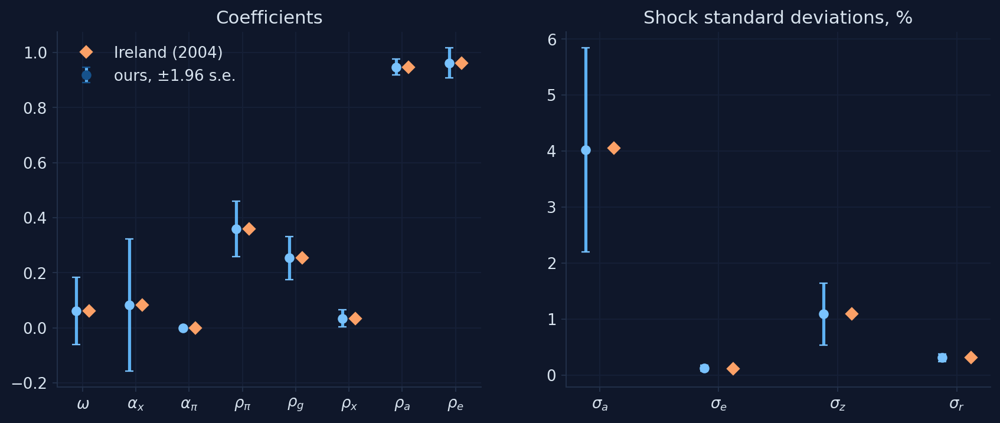
Chart: our maximum likelihood estimates (Snowdrop, Klein solver, Durbin–Koopman filter) with ±1.96 standard errors, next to Ireland (2004), Table 1; Appendix D, Section D.11.
Our estimates reproduce Ireland’s almost to the last digit
| \(\omega\) | \(\alpha_x\) | \(\alpha_\pi\) | \(\rho_\pi\) | \(\rho_g\) | \(\rho_x\) | \(\rho_a\) | \(\rho_e\) | \(\sigma_a\) | \(\sigma_e\) | \(\sigma_z\) | \(\sigma_r\) | |
|---|---|---|---|---|---|---|---|---|---|---|---|---|
| Ireland (2004) | 0.0617 | 0.0836 | 0.0001 | 0.3597 | 0.2536 | 0.0347 | 0.9470 | 0.9625 | 0.0405 | 0.0012 | 0.0109 | 0.0031 |
| his s.e. | 0.0634 | 0.1139 | 0.0737 | 0.0469 | 0.0391 | 0.0152 | 0.0250 | 0.0248 | 0.0157 | 0.0003 | 0.0028 | 0.0003 |
| ours | 0.0619 | 0.0836 | 0.0000 | 0.3597 | 0.2536 | 0.0346 | 0.9470 | 0.9626 | 0.0402 | 0.0012 | 0.0109 | 0.0031 |
| our s.e. | 0.0627 | 0.1225 | 0.0000 | 0.0514 | 0.0396 | 0.0157 | 0.0149 | 0.0275 | 0.0093 | 0.0002 | 0.0028 | 0.0004 |
Most standard errors are close to Ireland’s; two exceptions are worth understanding.
A parameter at its bound has no meaningful standard error
- \(\alpha_\pi\) sits at its lower bound, zero, and Snowdrop reports a standard error of 0
- standard errors come from the curvature of the likelihood, computed by stepping a little to each side of the estimate
- at a bound one side is off limits, so the calculation breaks down
- Ireland reports 0.0737 for his estimate of zero, computed another way
A standard error of exactly zero is a warning sign, not a sign of precision.
A flat ridge: many parameter values fit the data almost equally well
- the two runs can reach almost the same log-likelihood with very different \(\omega\) and \(\alpha_x\) (Colab: \(\omega \approx 0.16\) instead of 0.06)
- Ireland’s own standard errors say the same: 0.063 for \(\omega = 0.062\); 0.114 for \(\alpha_x = 0.084\)
- such parameters are weakly identified: the data cannot tell them apart
1. Start from several places, including published estimates; keep the highest log-likelihood.
2. Read the standard errors: one as large as its estimate means “barely identified”.
3. Know your software: Snowdrop sets the filter’s start once, from the starting values.
The optimizer’s answer is where it stopped, not necessarily the maximum
“The software found the maximum likelihood estimate.”
It found a point where it stopped improving. From the file’s starting values it stopped at 2646.66; from Ireland’s values the likelihood reaches 2648.47.
The estimates describe a Fed that reacts to inflation and growth
- the rule responds strongly to inflation (\(\rho_\pi \approx\) 0.36) and output growth (\(\rho_g \approx\) 0.25), little to the gap (\(\rho_x \approx 0.03\)); in a rule written in changes, these responses accumulate
- preference and cost-push shocks are very persistent: \(\rho_a\) and \(\rho_e\) near 0.95
- the backward-looking weights \(\alpha_x\) and \(\alpha_\pi\) are small: the data prefer forward-looking IS and Phillips curves
What does the estimated model say happened in the 1970s and early 1980s?
Using the whole sample, the filter’s smoother estimates the variables we never observe. What should the cost-push shock and the output gap show around the oil shocks and the Volcker disinflation?
The model reads U.S. history through its shocks
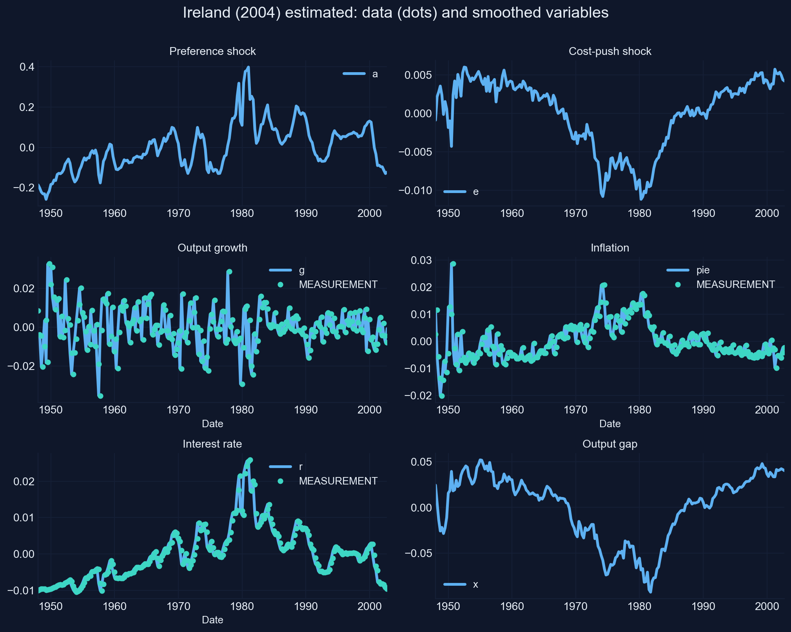
Chart: Snowdrop’s plot (restyled) of the smoothed variables of Ireland’s model at our maximum likelihood estimates, with the data (dots); Appendix D, Section D.11.
Oil shocks, a Volcker recession, and a quarter of the cycle from technology
- the cost-push shock falls sharply in 1974 and 1979–80: with its minus sign, these are inflationary cost shocks, the two oil shocks
- the output gap is deeply negative in the early 1980s, when the Fed raised rates to bring inflation down
- in Ireland’s variance decomposition (his Table 2), technology explains about a quarter of output growth’s forecast-error variance, monetary policy more than a third
Technology shocks are part of the U.S. business cycle, not all of it: Ireland’s answer to his question.
Bayes’ rule: the posterior is the likelihood times the prior
\[p(\theta\mid y)\;\propto\;p(y\mid\theta)\,p(\theta) \qquad\Longleftrightarrow\qquad \log p(\theta\mid y)=\log L(\theta)+\log p(\theta)+\text{constant}\]
- the prior \(p(\theta)\) sums up outside evidence before seeing the data
- the likelihood \(p(y\mid\theta)\) is Act IV’s, from the Kalman filter
- the posterior mode maximizes the sum: maximum likelihood plus one term, the log of the prior
- example prior for a persistence: a beta distribution (it lives between 0 and 1) with mean \(m = 0.5\) and s.d. \(s = 0.15\): shapes \(mk\) and \((1-m)k\) with \(k = m(1-m)/s^2 - 1 = 10.1\)
A prior says 0.5, the data say 0.815. Where does the posterior land?
With the first 40 observations, the maximum likelihood estimate of \(\rho\) is 0.815. The prior is a beta with mean 0.5 and s.d. 0.15. The truth is 0.9.
Guess the posterior mode. Halfway between, at about 0.66? Closer to the data? Closer to the prior?
The posterior lies between the prior and the likelihood
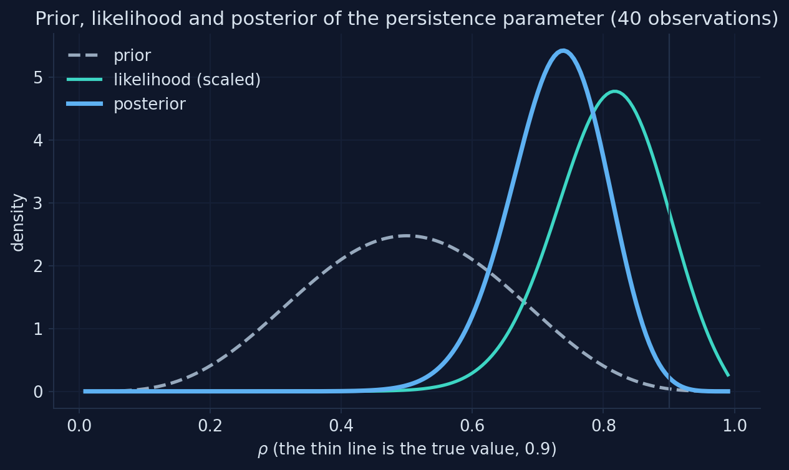
Chart: prior (beta, mean 0.5, s.d. 0.15), likelihood and posterior of \(\rho\) for the first 40 simulated observations, equation (D.30); Appendix D, Section D.12.
The posterior leans toward the more precise source
- maximum likelihood 0.815, prior mean 0.5, posterior mode 0.740
- the likelihood is narrower than the prior, so the data win most of the argument
- the prior still pulls the mode down from 0.815
- with more data the likelihood narrows and the prior matters less; where the likelihood is flat, the prior decides
What if the prior were tighter, or flat?
Change the prior’s standard deviation from 0.15 to 0.05, then to a flat prior. Where does the posterior mode go?
Predict the mode for a very tight prior (s.d. 0.05) and for a flat one.
A tight prior drags the estimate; a flat prior leaves it to the data
Mini-model built for this deck from equation (D.30) of Appendix D: the notebook’s first 40 observations and beta priors with mean 0.5.
The tighter the prior, the more it decides
| Prior s.d. | 0.05 | 0.10 | 0.15 | 0.20 | 0.25 | flat |
|---|---|---|---|---|---|---|
| Posterior mode of \(\rho\) | 0.565 | 0.670 | 0.740 | 0.780 | 0.805 | 0.815 |
A prior is a statement of confidence: the more confident it is, the more the result reflects it rather than the data.
The file’s priors are all normal: the posterior mode in one call
| \(\omega\) | \(\alpha_x\) | \(\rho_\pi\) | \(\rho_g\) | \(\rho_x\) | \(\sigma_a\) | |
|---|---|---|---|---|---|---|
| prior (normal): mean, s.d. | 0.20, 0.02 | 0.10, 0.05 | 0.30, 0.10 | 0.30, 0.10 | 0.25, 0.0625 | 0.03, 1.80 |
| maximum likelihood | 0.062 | 0.084 | 0.360 | 0.254 | 0.035 | 0.040 |
| posterior mode | 0.155 | 0.110 | 0.348 | 0.276 | 0.070 | 0.025 |
Where do the posterior modes land, relative to the priors and the ML estimates?
For each parameter, compare three things: the prior’s shape, the maximum likelihood estimate, and the posterior mode.
Which parameter do you expect the prior to move most: one with a precise likelihood, or a weakly identified one like \(\omega\)?
The file’s normal priors, the ML estimates and the posterior modes
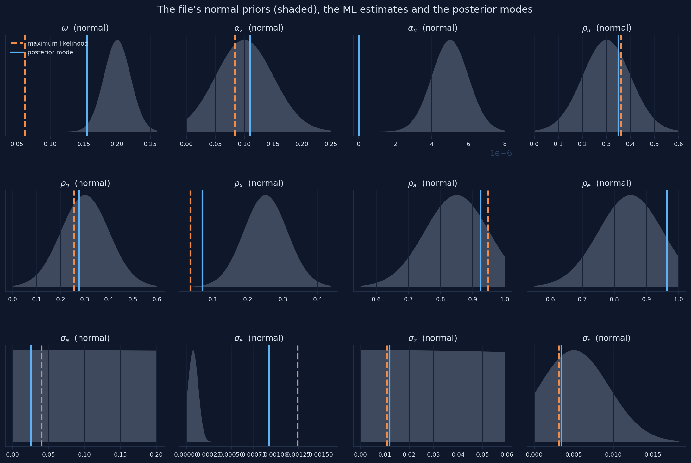
Chart: Snowdrop’s prior densities (pdf) from the file Ireland2004.yaml, with our ML estimates (dashed) and posterior modes (solid); Appendix D, Section D.12.
A tight prior decided ω; a flat one decided nothing
- the prior for \(\omega\), normal with s.d. 0.02 around 0.2, pulls it from 0.062 to 0.155
- the prior for \(\alpha_\pi\) has mean 0.000005 and s.d. 0.000001: it nails \(\alpha_\pi\) at zero before any data are seen
- the prior for \(\sigma_a\) (s.d. 1.8) is flat over every plausible value, yet \(\sigma_a\) falls from 0.040 to 0.025, because \(\omega\) moved
Some of the file’s priors are very tight and some very loose: neither choice is explained, and both shape the results.
Match the prior’s shape to the parameter’s range
| Parameters | Range | Usual prior | Our choice (mean, s.d.) |
|---|---|---|---|
| \(\omega\), \(\alpha_x\), \(\alpha_\pi\), \(\rho_a\), \(\rho_e\) | between 0 and 1 | beta | \(\omega\) (0.2, 0.1); \(\alpha_x\), \(\alpha_\pi\) (0.1, 0.05); \(\rho_a\), \(\rho_e\) (0.85, 0.1) |
| \(\rho_\pi\), \(\rho_g\), \(\rho_x\) | positive | gamma | \(\rho_\pi\), \(\rho_g\) (0.3, 0.1); \(\rho_x\) (0.1, 0.05) |
| \(\sigma_a\), \(\sigma_e\), \(\sigma_z\), \(\sigma_r\) | positive, possibly large | inverse gamma | mean = s.d. = 0.03, 0.002, 0.01, 0.003 |
The same mean for \(\omega\) (0.2) as the file, but five times wider: the data get a say.
From a mean and a standard deviation to each distribution’s parameters
- beta: \(k = m(1-m)/s^2 - 1\); shapes \(mk\) and \((1-m)k\)
- gamma: shape \(m^2/s^2\), scale \(s^2/m\)
- inverse gamma: use
inv_gamma1_pdf, the version Dynare uses
In this version, inv_gamma_pdf and inv_gamma2_pdf turn the mean and s.d. into the wrong distribution: plot every prior you use.
With wider, better-shaped priors, how far do the posterior modes move?
Estimate the posterior mode again with the conventional priors. Compare each mode with the ML estimate and with the prior.
Where will \(\omega\) land now: near the ML 0.06, the prior mean 0.2, or in between? Will \(\alpha_\pi\) stay at zero?
Conventional priors, the ML estimates and the posterior modes
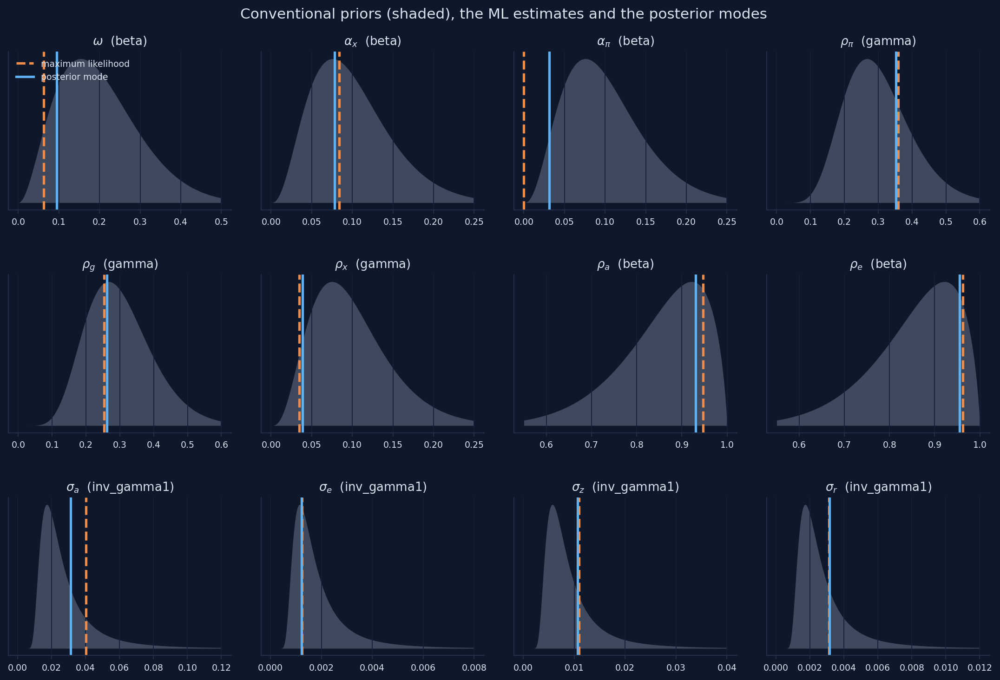
Chart: our conventional priors (beta, gamma, inverse gamma) from Snowdrop’s pdf, with our ML estimates (dashed) and posterior modes (solid); Appendix D, Section D.12.
Three columns of estimates: who decided, the data or the prior?
| \(\omega\) | \(\alpha_x\) | \(\alpha_\pi\) | \(\rho_\pi\) | \(\rho_g\) | \(\rho_x\) | \(\rho_a\) | \(\rho_e\) | \(\sigma_a\) | \(\sigma_e\) | \(\sigma_z\) | \(\sigma_r\) | |
|---|---|---|---|---|---|---|---|---|---|---|---|---|
| maximum likelihood | 0.062 | 0.084 | 0.000 | 0.360 | 0.254 | 0.035 | 0.947 | 0.963 | 0.040 | 0.0012 | 0.011 | 0.0031 |
| posterior, file’s priors | 0.155 | 0.110 | 0.000 | 0.348 | 0.276 | 0.070 | 0.925 | 0.963 | 0.025 | 0.0009 | 0.012 | 0.0034 |
| posterior, conventional | 0.094 | 0.078 | 0.031 | 0.353 | 0.262 | 0.039 | 0.930 | 0.955 | 0.031 | 0.0012 | 0.011 | 0.0032 |
| posterior s.e. / prior s.d. | 0.50 | 0.88 | 0.38 | 0.40 | 0.37 | 0.24 | 0.17 | 0.24 | 0.19 | 0.10 | 0.21 | 0.11 |
A small ratio means the data were informative; a ratio near one means the data said little, and the prior decided.
Where the data are silent, the prior speaks, and it can move other parameters
- informative data: the policy responses \(\rho_\pi\), \(\rho_g\) barely move; for the shocks and their persistence, the posterior is a quarter of the prior’s width or less
- silent data: for \(\alpha_x\) the ratio is 0.88: the posterior is hardly narrower than the prior
- spillovers: when the file’s prior pushes \(\omega\) up, \(\sigma_a\) falls from 0.040 to 0.025: the data pin down a combination of the two
Always report the priors and compare the posterior with them: a careless prior can decide a result that looks like a finding.
With 220 quarters of data, the prior still matters for some parameters
“With a long sample, the prior washes out; Bayesian and ML estimates are the same.”
Only where the likelihood is curved. Along a flat ridge the prior decides at any sample size: with the file’s priors \(\omega\) is 0.155, with conventional priors 0.094, by ML 0.062.
Act V formula sheet: estimating a DSGE model
| Idea | Formula / rule | In Snowdrop |
|---|---|---|
| Read the model | Solver="Klein", Filter="Durbin_Koopman", Smoother="Durbin_Koopman", Prior="Equilibrium" |
importModel(..., measurement_file_path=...) |
| Maximum likelihood | \(\widehat{\theta} = \arg\max \log L(\theta)\) | estimate(model, estimate_ML=True) |
| Several starting points | keep the run with the highest log-likelihood | starting values in estimated_parameters |
| At a bound | the standard error is not meaningful | — |
| Bayes’ rule | \(\log p(\theta\mid y) = \log L(\theta) + \log p(\theta) + c\) | estimate(model, estimate_Posterior=True) |
| Beta prior | \(k = m(1-m)/s^2 - 1\); shapes \(mk\), \((1-m)k\) | beta_pdf, m, s |
| Gamma prior | shape \(m^2/s^2\), scale \(s^2/m\) | gamma_pdf, m, s |
| Inverse gamma | Dynare’s version | inv_gamma1_pdf, m, s |
| Who decided | posterior s.e. / prior s.d.: small = data, near 1 = prior | compare the tables |
Going further: sample the whole posterior, and smooth the shocks
Markov chain Monte Carlo
- report the whole posterior, not just its mode
- the emcee sampler (Goodman and Weare, 2010) or adaptive Metropolis–Hastings
SamplingMethod="emcee", thenestimate(..., sample=True)- runs take hours; check convergence
The Kalman smoother
estimatealso returns the smoothed shocks, quarter by quarter- rebuild history shock by shock: how much of 1980–82 was policy?
- start from
kalman_filterandplotDecomposition(..., isKF=True)
Bigger models wait in the package, and Snowdrop reads other formats
Where (in supplements/) |
What | Why look |
|---|---|---|
models/COVID19/ert_model.yaml |
the paper’s epidemic model (Eichenbaum, Rebelo and Trabandt) | 64 equations, solved by homotopy |
models/COVID19/sw_model.yaml |
Smets and Wouters (2007) | the estimated responses of Chapter 15 |
models/COVID19/gsw_model.yaml |
the Galí–Smets–Wouters model applied to the lockdowns | a modern medium-scale model |
models/MPAF/model.mod, model.yaml |
the IMF’s basic Quarterly Projection Model, in Dynare and Snowdrop form | compare two toolboxes on one model |
docs/UserGuide.pdf, docs/NumericalAlgorithms.pdf |
every option; the solvers and filters | the real documentation |
Read a big model’s file first; then simulate it with the tools of Act III. Other Python projects exist too, for example dolo and pydsge.
Re-estimate Ireland on today’s data in five steps
- download
GDPC1,CNP16OV,GDPDEF,TB3MSfrom FRED (Appendix B) - average the monthly series by quarter
- per-capita growth and inflation (log differences); quarterly rate = annual / 400
- subtract the means; save
Date,obs_g,obs_pie,obs_ras a CSV - set
rangeandfilter_range; pass the file asmeasurement_file_path
Two warnings: from 2009 to 2015 the rate was stuck at zero, which a linear rule cannot describe; the pandemic quarters of 2020 are huge outliers.
Common errors, part 1: installing, files and solving
| What you see | Why | What to do |
|---|---|---|
ModuleNotFoundError: No module named 'snowdrop' |
Colab forgets installed packages when the runtime restarts | run the install cell again |
| pip tries to build NumPy 1.26 and fails | the install cell lost its --no-deps |
install exactly as in the setup slides |
FileNotFoundError for a file you just wrote |
importing Snowdrop (or its estimation module) moved Python into its folder | os.chdir(WORK) |
a variable named pi gives odd results |
it clashes with the constant \(\pi\) | rename it (infl, pie) |
run(..., irf=True) fails for a nonlinear model |
a limitation of this version | simulate with and without the shock and subtract |
| a simulation drifts with no shock | the starting values are not the steady state | steady state by formula; check residuals of 0.000 |
| random histories look too smooth | Snowdrop anticipates all future shocks by default | anticipate=False |
| a plausible-looking path | ABLR leaves out exogenous paths in this version | checkSolution; use LBJ |
Common errors, part 2: estimating
| What you see | Why | What to do |
|---|---|---|
| nonsense estimates, or “Model calibration failed” | the filter does not support estimation, or a start lies outside its bounds | Filter="Durbin_Koopman"; check the bounds |
TypeError: 'NoneType' object is not subscriptable at the end of estimate |
no smoother was chosen | Smoother="Durbin_Koopman" |
a second estimation lists the std_ parameters twice |
Snowdrop keeps a list between runs | clear est_shocks_names (our estimate helper does); read the model again |
| estimates change from run to run | the likelihood is flat in some directions | several starting points; keep the highest log-likelihood |
| an inverse-gamma prior with the wrong mean | inv_gamma_pdf and inv_gamma2_pdf mis-handle their inputs |
inv_gamma1_pdf; plot every prior |
algorithm="..." changes nothing |
Snowdrop uses L-BFGS-B when it computes standard errors | nothing to do |
Why learn DSGE models if they missed the 2008 crisis?
A skeptic says: “The DSGE models central banks used before 2008 had no banks and no financial crises. Their core assumptions (rational expectations, representative households) are the problem, so learning to estimate them is learning to be wrong precisely.”
Reply: the criticism of the pre-2008 models is fair and contested in its reach. Defenders show that models now include financial frictions and the zero lower bound (Christiano, Eichenbaum and Trabandt, 2018); critics argue the core assumptions still fail (Stiglitz, 2018); a middle view keeps DSGE models as one tool among several (Blanchard, 2018; Lindé, 2018). Either way, what this deck practices (writing a model down, solving it, confronting it with data and checking every result) is how you find out what a model gets wrong.
What to remember from this appendix
- I. A DSGE model is a list of equations from choices, markets, shocks and policy rules; solving it means finding decision rules or a whole path
- II. With expectations, many paths satisfy the equations; Blanchard–Kahn says when exactly one stays bounded, and Newton’s method finds it
- III. Snowdrop turns a YAML file into simulations: it reproduced Chapter 13 exactly, the paper’s Fig. 1, and the RBC model’s responses, but only checks caught its gaps
- IV. The Kalman filter turns a state-space model into a likelihood; its peak is the estimate and its curvature the precision
- V. Ireland’s estimates were reproduced only from a second starting point; priors decide where the likelihood is flat, so report them
Solve for the one stable path, let the data speak through the filter, let priors speak only where the data are silent, and check every result
Open the Appendix D notebook in Colab and run every model yourself
Sources: figures, data and software
- Charts by hand (inflation and the cost shock; stable and exploding paths; the convex term; impulse responses; nonlinearity; the Kalman filter; the log-likelihood; prior, likelihood and posterior). Our computations in Appendix D, Sections D.4, D.7–D.10, D.12.
- Snowdrop’s charts (AS/AD events 1–3; RBC after a technology shock; ten random histories; Ireland’s smoothed variables). Snowdrop’s
plot, restyled in the book’s colors; Appendix D, Sections D.6, D.8, D.11. - Replication of the paper’s Fig. 1. Snowdrop’s
plotDecomposition; Goumilevski and Otterson (2025), Fig. 1; Appendix D, Section D.7. - Ireland’s data. U.S. per-capita real GDP growth, GDP-deflator inflation and the three-month Treasury bill rate, 1948Q1–2002Q4, from Ireland (2004), as shipped with Snowdrop (
supplements/data/gpr_1948.csv). - Estimates and priors charts. Our maximum likelihood and posterior-mode estimates with Snowdrop; Ireland (2004), Table 1; priors from Snowdrop’s
pdf; Appendix D, Sections D.11–D.12. - Live mini-models (six). Built for this deck from equations (D.1)–(D.4), (D.7)–(D.10), (D.17)–(D.22) and (D.30) of Appendix D, with the notebook’s parameters and random seeds; they reproduce the notebook’s printed numbers.
- Software. Snowdrop, commit 47a63b2 of 3 October 2026, github.com/gumilevskij/Framework (GNU GPL); model files
JLMP98.yaml,RBC.yaml,RBC1.yaml,Ireland2004.yaml. - Book appendix. Data Science and Macroeconomic Models, Appendix D: DSGE Modeling with Python.
Sources: research cited (A–H)
- Blanchard, O. (2018). On the future of macroeconomic models. Oxford Review of Economic Policy 34(1–2), 43–54.
- Blanchard, O. J., and Kahn, C. M. (1980). The solution of linear difference models under rational expectations. Econometrica 48(5), 1305–1311.
- Burgess, S., et al. (2013). The Bank of England’s forecasting platform: COMPASS, MAPS, EASE and the suite of models. Bank of England Working Paper 471.
- Christiano, L. J., Eichenbaum, M. S., and Trabandt, M. (2018). On DSGE models. Journal of Economic Perspectives 32(3), 113–140.
- Christoffel, K., Coenen, G., and Warne, A. (2008). The New Area-Wide Model of the euro area. ECB Working Paper 944.
- Clarida, R., Galí, J., and Gertler, M. (2000). Monetary policy rules and macroeconomic stability. Quarterly Journal of Economics 115(1), 147–180.
- Del Negro, M., et al. (2013). The FRBNY DSGE model. Federal Reserve Bank of New York Staff Report 647.
- Durbin, J., and Koopman, S. J. (2012). Time Series Analysis by State Space Methods, 2nd ed. Oxford University Press.
- Eichenbaum, M., Rebelo, S., and Trabandt, M. (2021). The macroeconomics of epidemics. Review of Financial Studies 34(11), 5149–5187.
- Fernández-Villaverde, J., and Guerrón-Quintana, P. A. (2021). Estimating DSGE models: recent advances and future challenges. Annual Review of Economics 13, 229–252.
- Frisch, R. (1933). Propagation problems and impulse problems in dynamic economics. In Economic Essays in Honour of Gustav Cassel. Allen and Unwin.
- Galí, J. (2015). Monetary Policy, Inflation, and the Business Cycle, 2nd ed. Princeton University Press.
- Goodman, J., and Weare, J. (2010). Ensemble samplers with affine invariance. Communications in Applied Mathematics and Computational Science 5(1), 65–80.
- Goumilevski, A., and Otterson, J. (2025). Snowdrop: Python package for DSGE modeling. Journal of Open Source Software 10(112), 8197. doi:10.21105/joss.08197
- Hamilton, J. D. (1994). Time Series Analysis. Princeton University Press.
- Herbst, E. P., and Schorfheide, F. (2016). Bayesian Estimation of DSGE Models. Princeton University Press.
Sources: research cited (I–Z)
- Ireland, P. N. (2004). Technology shocks in the New Keynesian model. Review of Economics and Statistics 86(4), 923–936.
- Juillard, M., Laxton, D., McAdam, P., and Pioro, H. (1998). An algorithm competition: first-order iterations versus Newton-based techniques. Journal of Economic Dynamics and Control 22(8–9), 1291–1318.
- Klein, P. (2000). Using the generalized Schur form to solve a multivariate linear rational expectations model. Journal of Economic Dynamics and Control 24(10), 1405–1423.
- Kumhof, M., Laxton, D., Muir, D., and Mursula, S. (2010). The Global Integrated Monetary and Fiscal Model (GIMF): theoretical structure. IMF Working Paper 10/34.
- Laxton, D., Meredith, G., and Rose, D. (1995). Asymmetric effects of economic activity on inflation: evidence and policy implications. IMF Staff Papers 42(2), 344–374.
- Lindé, J. (2018). DSGE models: still useful in policy analysis? Oxford Review of Economic Policy 34(1–2), 269–286.
- Lucas, R. E. (1976). Econometric policy evaluation: a critique. Carnegie-Rochester Conference Series on Public Policy 1, 19–46.
- Smets, F., and Wouters, R. (2007). Shocks and frictions in US business cycles: a Bayesian DSGE approach. American Economic Review 97(3), 586–606.
- Stiglitz, J. E. (2018). Where modern macroeconomics went wrong. Oxford Review of Economic Policy 34(1–2), 70–106.
- Textbook. Jones, C. I. (2024). Macroeconomics, 6th ed. W. W. Norton (Chapters 12, 13, 15–17, which this appendix builds on).